All recordings are made in the same lab, with the same equipment: - The person works at a wooden desk with a light wood-grain top, seen from a camera on their head. The desk is only the work surface: it is never the object of an action. When something is put down, it is put "on the desk". Call it "the desk", never "the table", so that "table" stays free for objects of the task. - Both hands wear black gloves. On the back of each hand sits a black three-pronged motion tracker, and straps, cables and sometimes a small black box run along the forearms. These are recording sensors, not objects: never describe them as being picked up, held or used. - Around the desk is the lab: the floor, walls, equipment, a dark curtain and sometimes other people. None of it is part of the task. The person may also turn away from the desk or walk around.Layer 2, one name each (ctx)
The person repeatedly assembles and takes apart a small orange plastic toy table made of five parts. To assemble it, the parts are picked up from the desk one at a time and fitted together, usually with one hand holding the partial assembly and the other bringing and pressing in a part; to take it apart, the parts are pulled off and put back down on the desk.
The person repeatedly assembles and takes apart a small orange plastic toy table made of five parts. To assemble it, the parts are picked up from the desk one at a time and fitted together, usually with one hand holding the partial assembly and the other bringing and pressing in a part; to take it apart, the parts are pulled off and put back down on the desk.
Same 8 frames + palm trajectory in every column. N/A: base 0 · ctx 0 · rich 2 · late 0 · split 0 · ab 0.
| move | clip (red border = the move) | VITRA prompt | + background (one name each) | + background (name lists) → 5 phrasings | 甲: VITRA caption → background only in the rewrite | 乙: objects in the caption, task only in the rewrite | A→B: VITRA caption, then frames + background → names + 5 phrasings |
|---|---|---|---|---|---|---|---|
| #2 4.05–5.79 s 1.73 s · 25 cm | 8 frames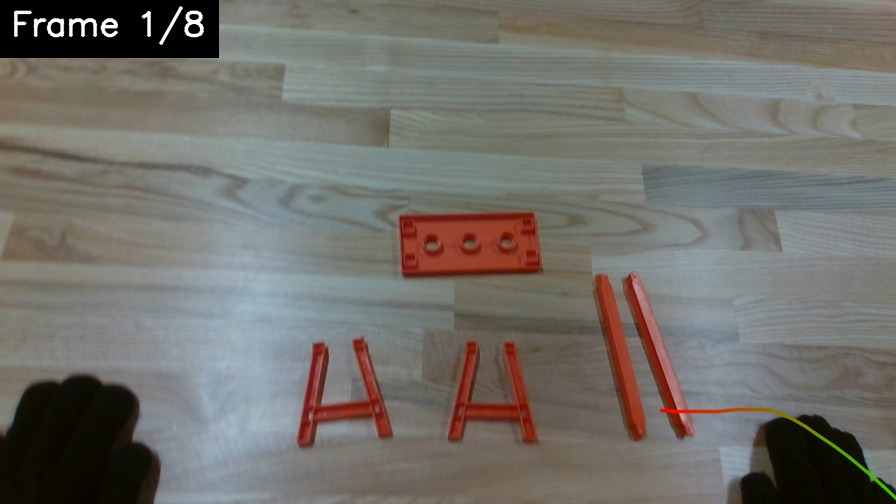 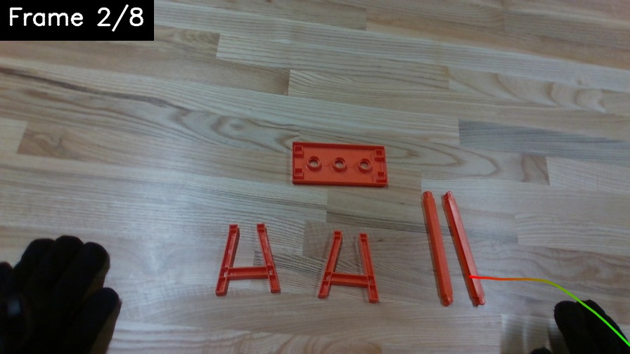 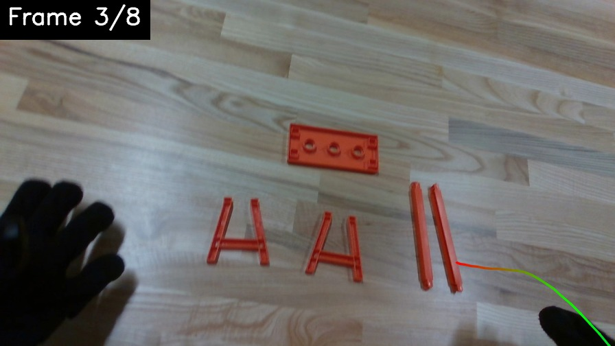 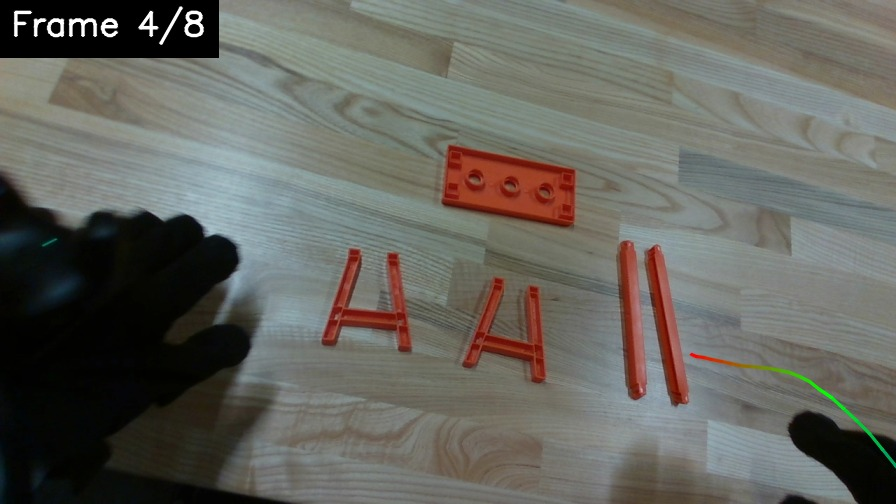 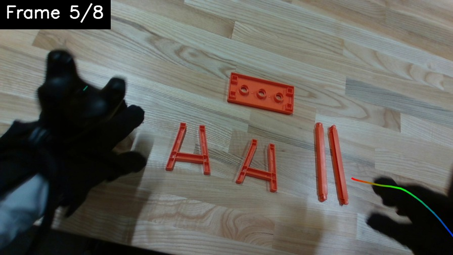 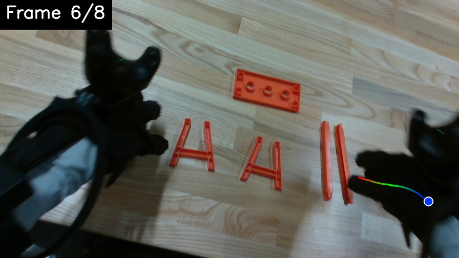 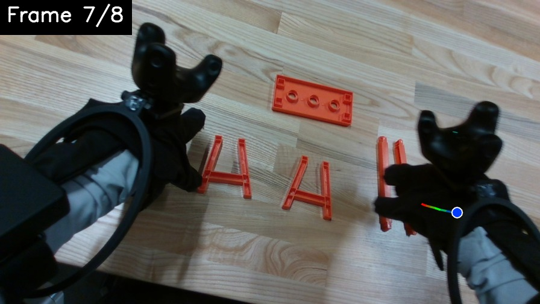 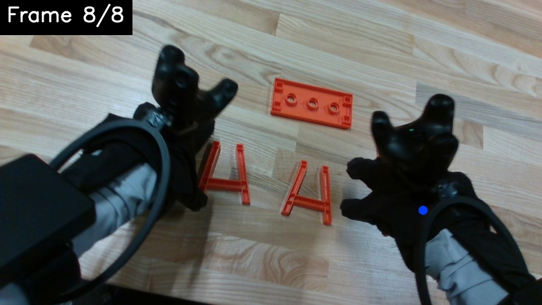 | Move the right hand toward the orange bars.thinkThe right hand (indicated by the blue dot and trajectory) starts at the bottom right and moves towards the two vertical orange bars. In Frame 7, the hand is positioned directly over the bars, and in Frame 8, the hand has moved away to the right, leaving the bars in their original position. The trajectory shows a clear approach and retreat motion without any grasping or lifting action, indicating the hand was moving towards the object but did not interact with it. | Move the right hand towards the orange sticks.thinkThe video sequence shows the right hand (indicated by the trajectory starting blue and ending red) moving from the bottom right towards the center of the desk. The hand approaches the two orange sticks lying on the surface. In the final frames, the hand hovers directly over the sticks, positioning itself to grasp them, but does not yet make contact or lift them. The action is a clear approach towards the object. | Move the right hand toward the orange stick and orange H-shaped piece. objects: orange stick, orange H-shaped piece
thinkThe right hand (indicated by the blue dot and trajectory) starts at the bottom right and moves towards the center of the desk where the orange toy parts are laid out. The trajectory ends near the orange stick and H-shaped piece, but the hand does not close around or pick up any object in the provided frames. The hand remains open and hovering over the parts, indicating a movement towards them without completing a grasp or manipulation action. | Move the right hand toward the orange bars.
thinkThe right hand (indicated by the blue dot and trajectory) starts at the bottom right and moves towards the two vertical orange bars. In Frame 7, the hand is positioned directly over the bars, and in Frame 8, the hand has moved away to the right, leaving the bars in their original position. The trajectory shows a clear approach and retreat motion without any grasping or lifting action, indicating the hand was moving towards the object but did not interact with it. | Move the right hand toward the space between the orange H-shaped pieces. objects: —
thinkThe right hand (marked by the blue dot and trajectory) starts at the bottom right in Frame 1 and moves leftward across the desk surface toward the center, passing near the orange sticks but not touching them. By Frame 7–8, it reaches a position between the two H-shaped pieces, with fingers open and oriented as if preparing to grasp or interact — yet no object is picked up or manipulated. The motion is purposeful and directed toward the central assembly area, specifically between the H-shaped pieces, suggesting intent to engage with the toy table structure. However, since no physical contact or manipulation occurs within these frames, the action is preparatory movement toward the assembly zone. | Move the right hand toward the orange sticks. VLM wrote: Move the right hand toward the orange bars.
thinkThe right hand (indicated by the blue dot and trajectory) starts at the bottom right and moves towards the two vertical orange bars. In Frame 7, the hand is positioned directly over the bars, and in Frame 8, the hand has moved away to the right, leaving the bars in their original position. The trajectory shows a clear approach and retreat motion without any grasping or lifting action, indicating the hand was moving towards the object but did not interact with it. |
| #3 7.89–10.55 s 2.67 s · 26 cm | 8 frames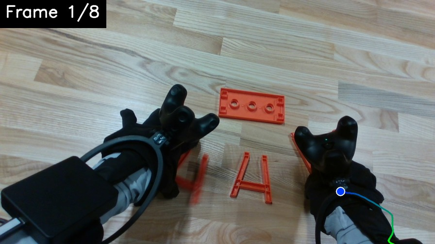 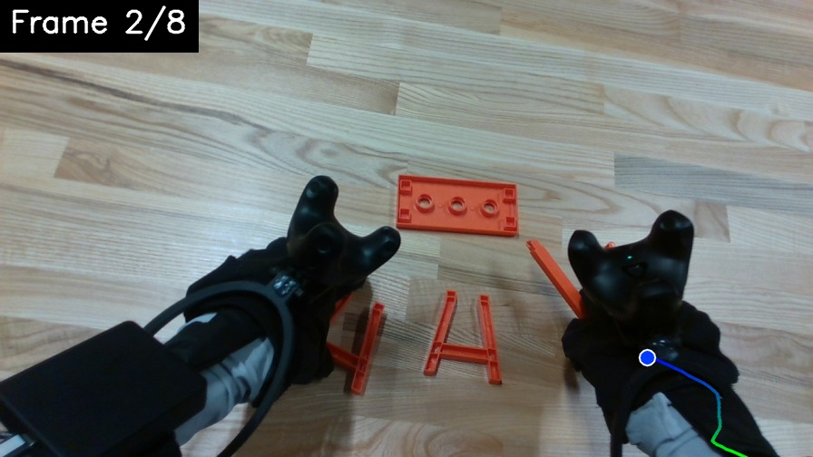 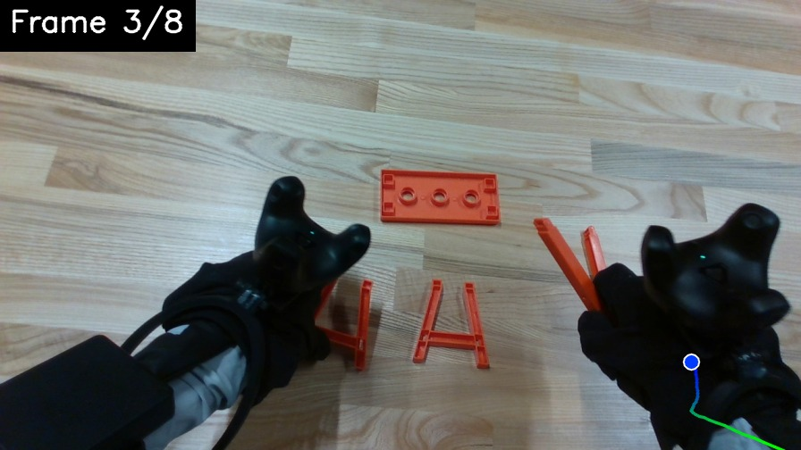 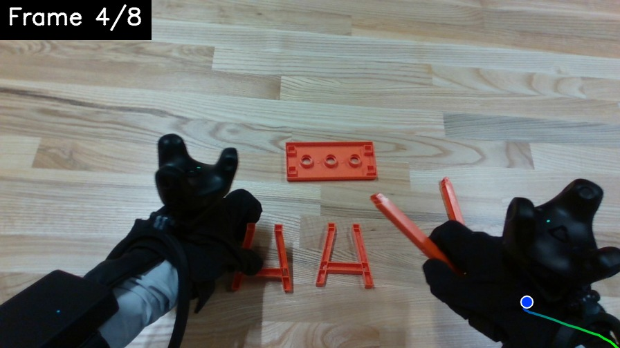 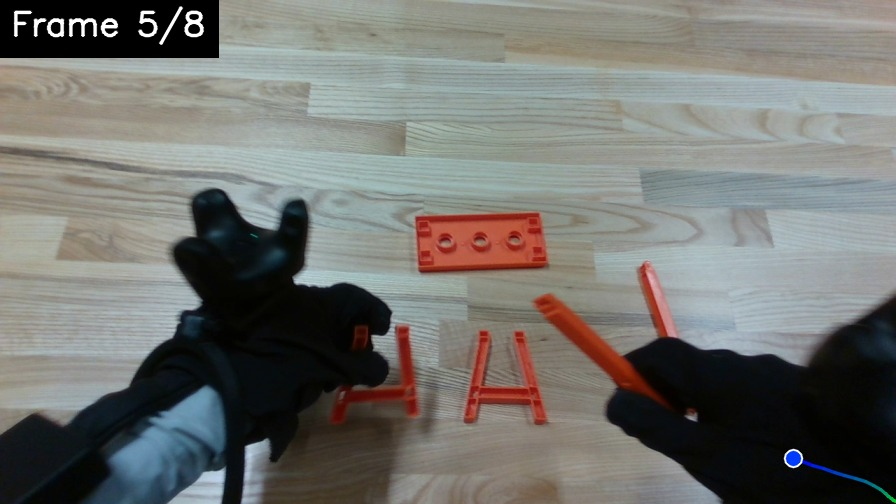 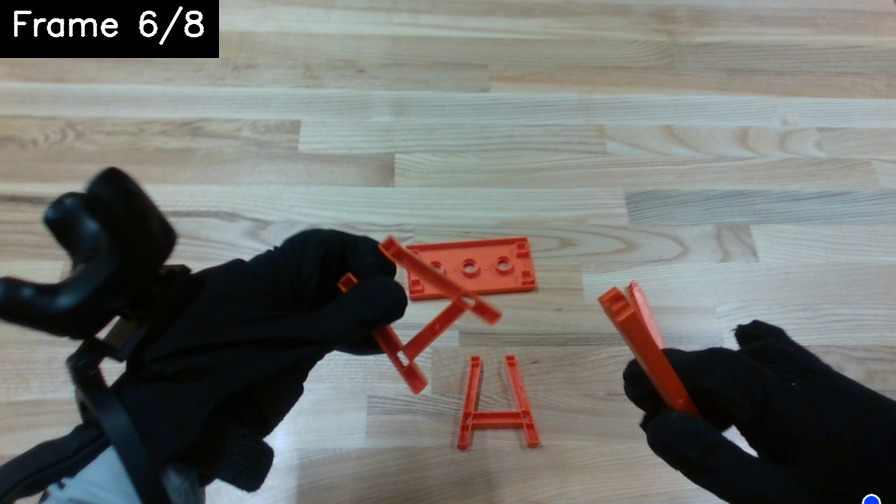 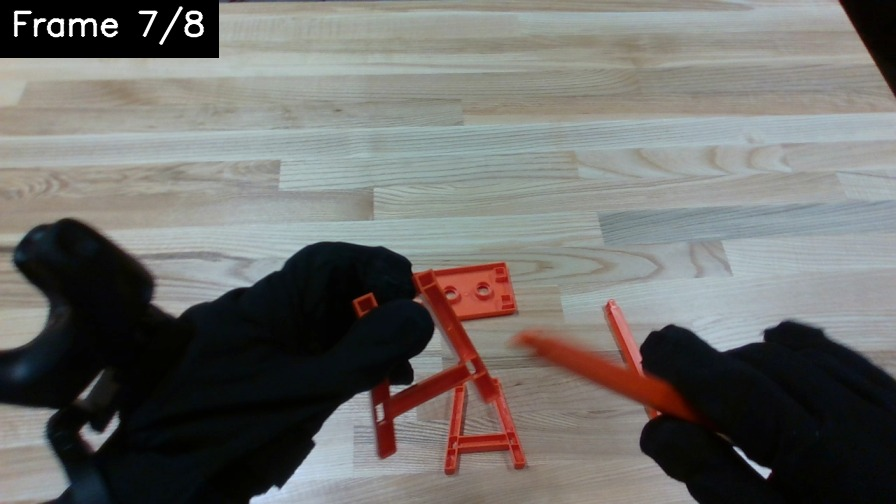 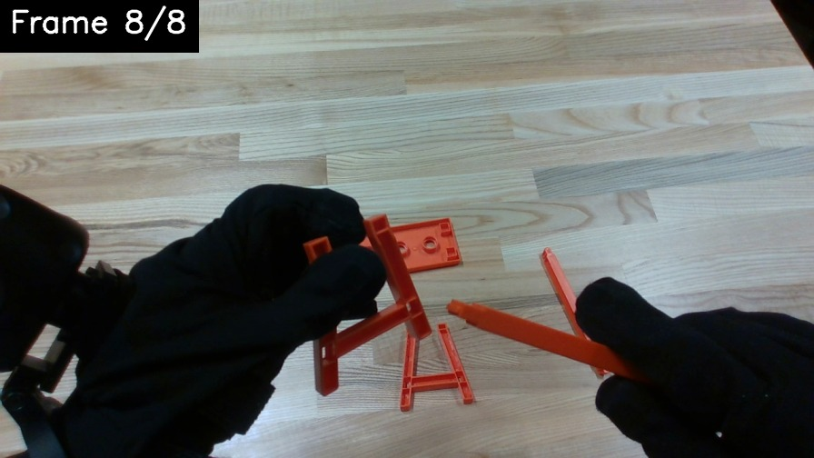 | Pick the orange plastic leg piece.thinkThe video sequence shows the right hand (indicated by the blue dot and trajectory) initially reaching for and picking up an orange plastic leg piece from the floor in Frames 1-3. The hand then lifts and holds this piece while the left hand manipulates another piece. The right hand's primary action is the acquisition of the object. | Pick up the orange stick and move it towards the orange H-shaped piece.thinkThe right hand starts near the desk surface and picks up an orange stick (Frame 1-2). It then lifts the stick and moves it towards the left side of the frame (Frame 3-5). In the final frames, the right hand holds the orange stick and positions it near an orange H-shaped piece that is being held by the left hand, preparing to connect them. | Pick up the orange stick and bring it toward the orange H-shaped piece to insert it. objects: orange stick, orange H-shaped piece
thinkIn Frame 1, the right hand is open and near an orange stick on the desk. By Frame 2, it has picked up the stick. In Frames 3–5, the right hand holds the stick while moving slightly. In Frame 6, the left hand picks up an H-shaped piece. In Frames 7–8, the right hand brings the stick toward the H-shaped piece held by the left hand, aligning it for insertion — indicating intent to connect the parts. The trajectory shows purposeful motion toward assembly. | Pick the orange H-shaped piece. VLM wrote: Pick the orange plastic leg piece.
thinkThe video sequence shows the right hand (indicated by the blue dot and trajectory) initially reaching for and picking up an orange plastic leg piece from the floor in Frames 1-3. The hand then lifts and holds this piece while the left hand manipulates another piece. The right hand's primary action is the acquisition of the object. | Insert the orange stick into the orange H-shaped piece. objects: orange stick, orange H-shaped piece
thinkThe right hand starts near the floor with no object, then picks up an orange stick (Frame 2–3). It holds the stick while the left hand picks up an H-shaped piece (Frame 5–6). In Frame 7–8, the right hand moves the orange stick toward the H-shaped piece held by the left hand, aligning it for insertion — indicating intent to connect the stick into the H-piece. The trajectory and hand posture confirm active manipulation of the stick toward the H-piece. | Pick up the orange H-shaped piece. VLM wrote: Pick the orange plastic leg piece.
thinkThe video sequence shows the right hand (indicated by the blue dot and trajectory) initially reaching for and picking up an orange plastic leg piece from the floor in Frames 1-3. The hand then lifts and holds this piece while the left hand manipulates another piece. The right hand's primary action is the acquisition of the object. |
| #4 21.42–24.42 s 3.00 s · 33 cm | 8 frames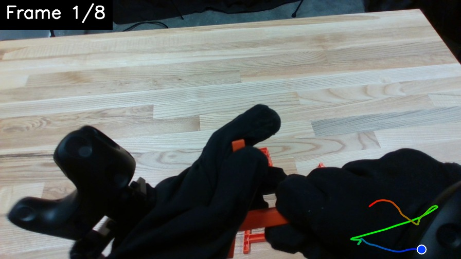 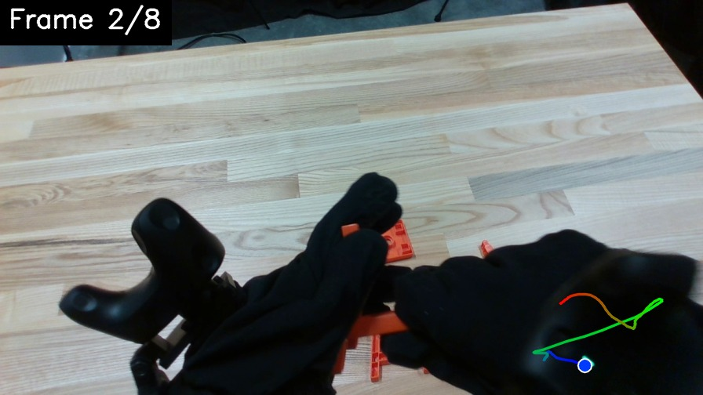 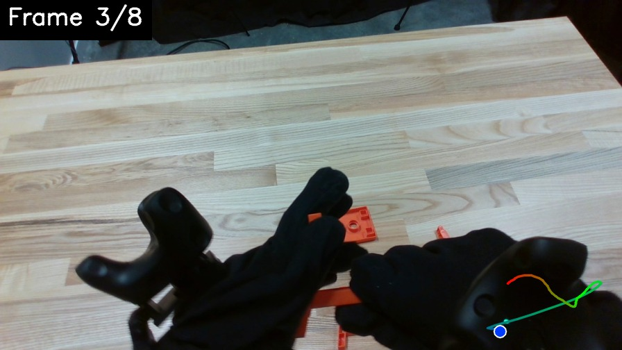 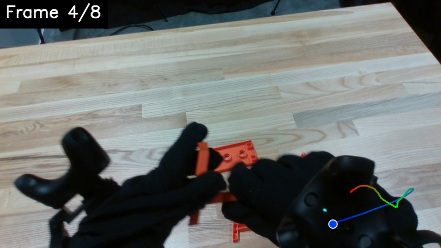 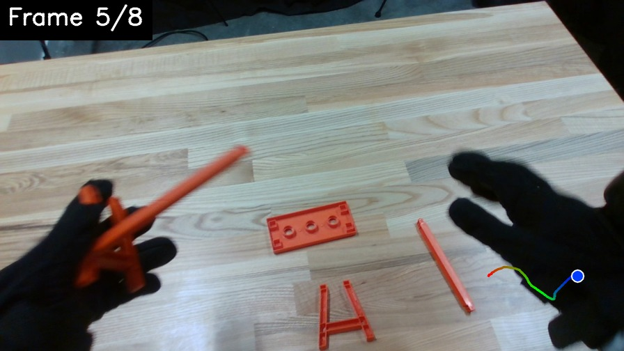 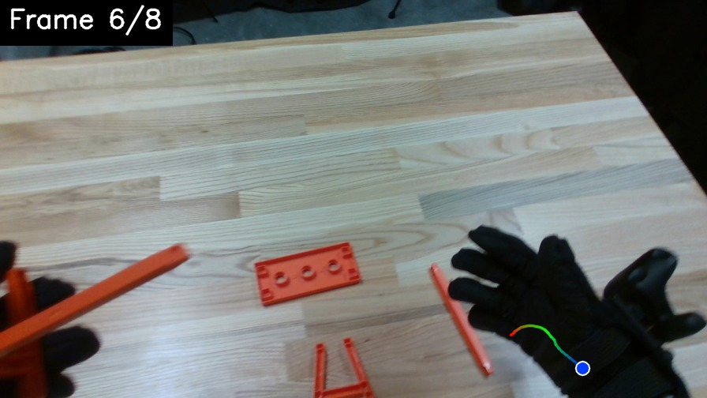 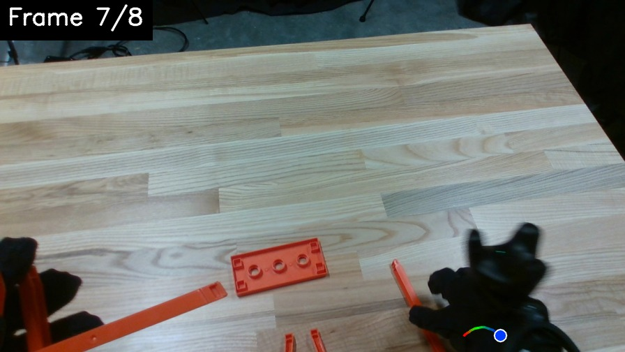 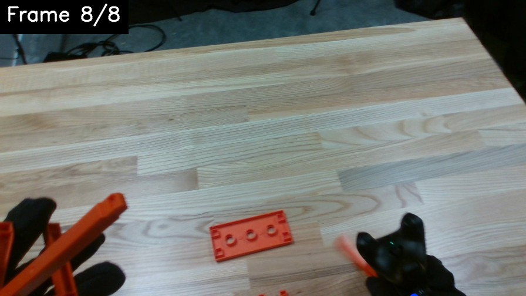 | Place the orange plastic piece on the table.thinkThe sequence begins with the right hand holding an orange plastic piece alongside the left hand. In Frame 5, the hands separate, and the right hand releases its grip, leaving the piece on the table. The trajectory shows the right hand moving away from the object and then returning to grasp a different orange piece on the right side of the table in the final frames. The primary action is the release of the held object. | Pick the orange stick.thinkIn frames 1-4, the right hand is holding an orange stick and manipulating it near the left hand's assembly. In frame 5, the right hand releases the stick, leaving it on the desk. In frames 6-8, the right hand moves towards and then grasps a different orange stick lying on the desk. The trajectory confirms this movement from the release point to the new object. | Pick the orange stick. objects: orange stick
thinkIn frames 1-4, the right hand is engaged in manipulating the orange toy table assembly held by the left hand. In frame 5, the assembly is pulled apart, and the right hand releases its grip. From frame 6 to frame 8, the right hand moves across the desk surface towards a loose orange stick lying on the right side, eventually grasping it in frame 8. | Place the orange plastic piece on the desk. VLM wrote: Place the orange plastic piece on the table.
thinkThe sequence begins with the right hand holding an orange plastic piece alongside the left hand. In Frame 5, the hands separate, and the right hand releases its grip, leaving the piece on the table. The trajectory shows the right hand moving away from the object and then returning to grasp a different orange piece on the right side of the table in the final frames. The primary action is the release of the held object. | Pick the orange stick. objects: orange stick
thinkIn frames 1-4, the right hand is engaged in manipulating an orange stick with the left hand, likely assembling or adjusting it. In frame 5, the right hand releases the assembly and moves away. In frames 6-8, the right hand clearly moves toward and then grasps a separate orange stick lying on the desk, indicating a clear intent to pick it up. | Place the orange stick on the desk. VLM wrote: Place the orange plastic piece on the table.
thinkThe sequence begins with the right hand holding an orange plastic piece alongside the left hand. In Frame 5, the hands separate, and the right hand releases its grip, leaving the piece on the table. The trajectory shows the right hand moving away from the object and then returning to grasp a different orange piece on the right side of the table in the final frames. The primary action is the release of the held object. |
| #5 24.52–25.65 s 1.13 s · 33 cm | 8 frames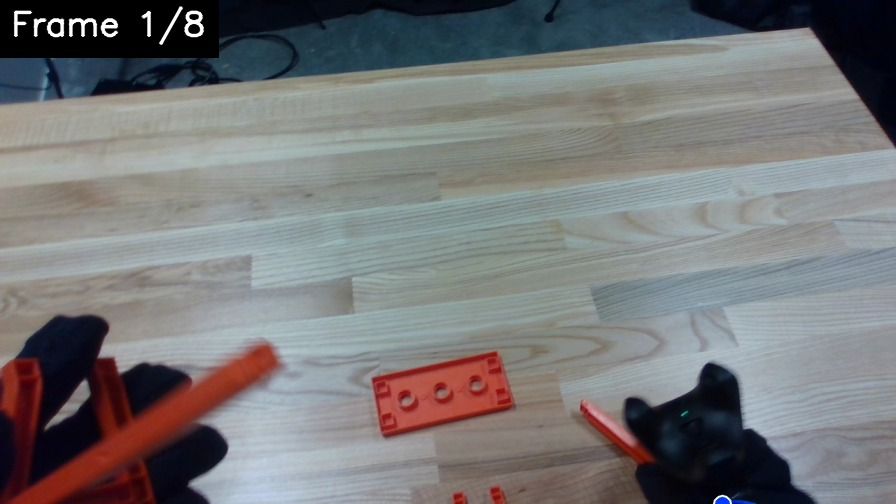 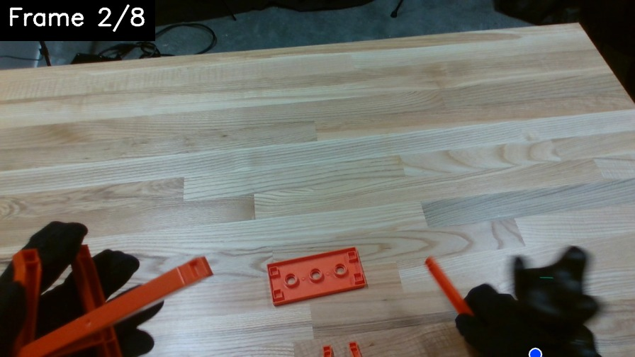 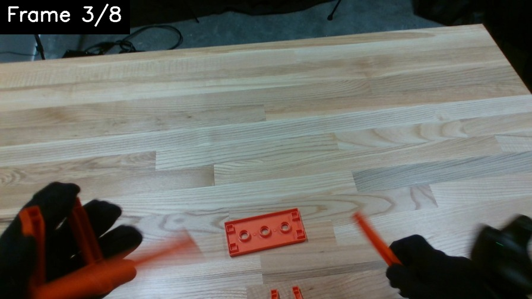 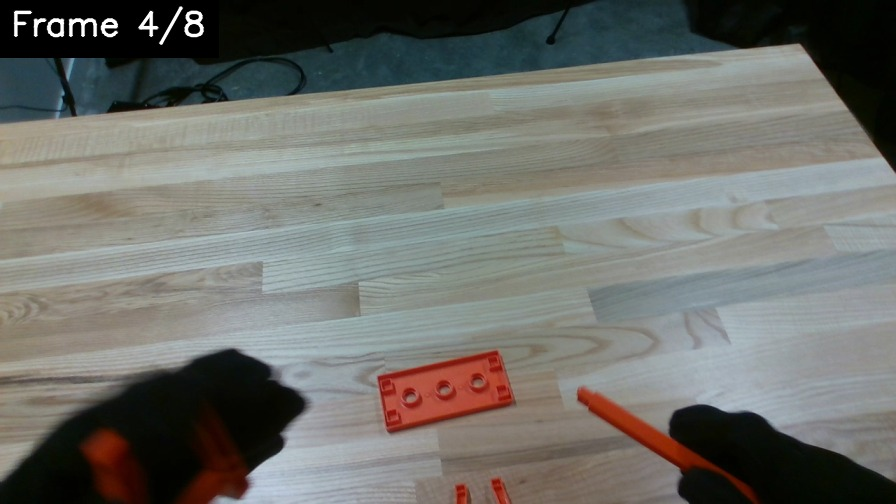 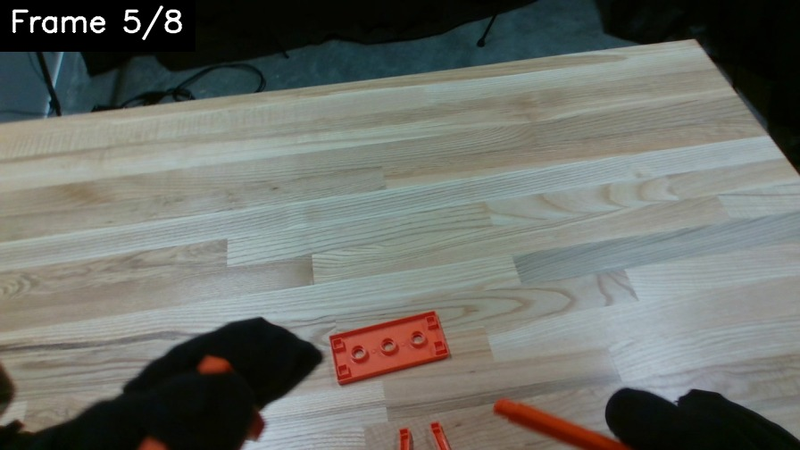 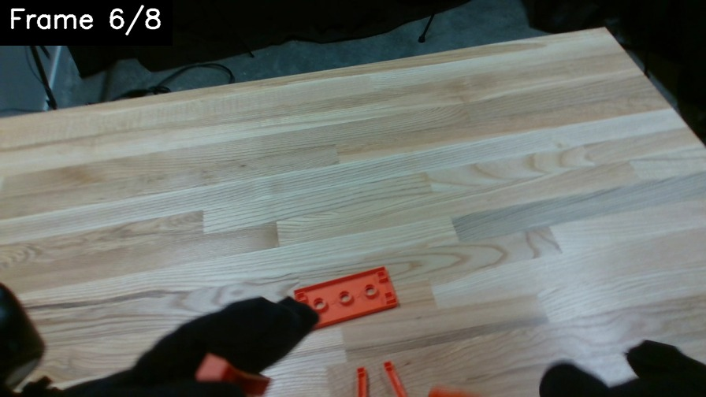 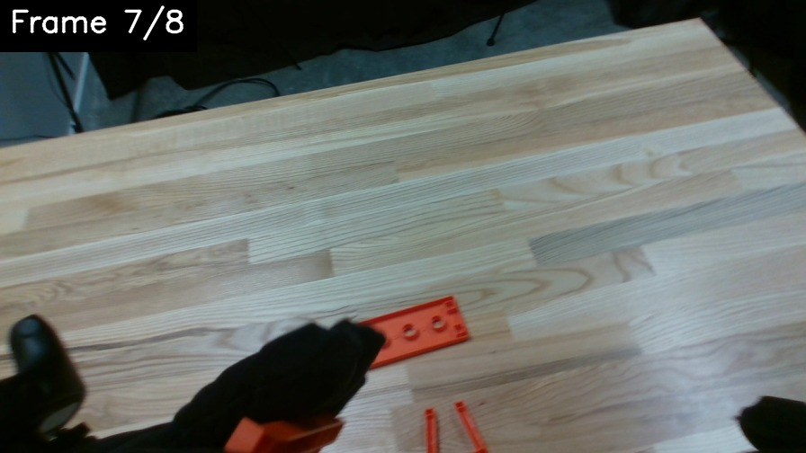 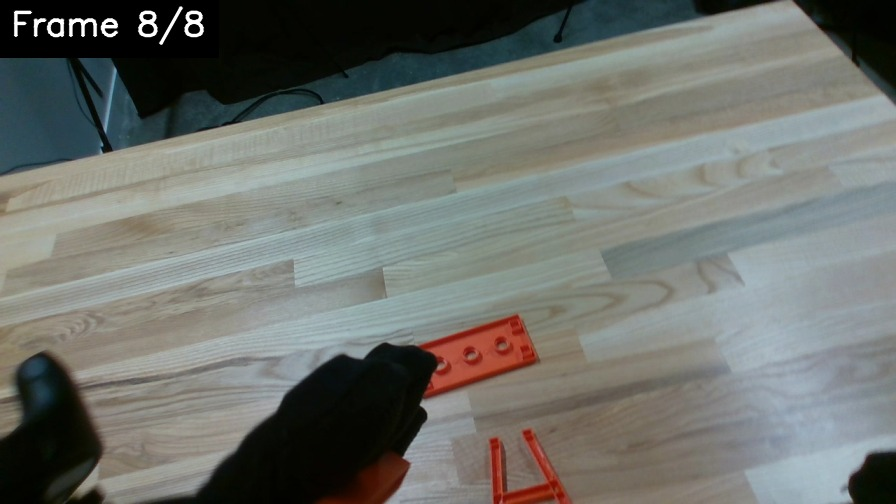 | Place the orange stick on the table.thinkThe video sequence shows a right hand holding an orange stick-like object. The hand moves the object towards the center of the table where an orange rectangular piece is located. The trajectory indicates a deliberate placement of the stick onto the table surface near the other object, rather than picking it up or manipulating it further. | Place the orange stick on the desk.thinkIn the initial frames (1-3), the right hand is holding an orange stick. By Frame 4, the hand moves the stick towards the bottom edge of the view and releases it. In the subsequent frames (5-8), the right hand is empty and moves away from the object, while the left hand continues to hold a different assembly. The action is clearly the placement of the stick onto the desk. | Place the orange stick on the desk. objects: orange stick
thinkIn Frame 1, the right hand is holding an orange stick and moving it away from the center. By Frame 4, the right hand has placed the orange stick down on the desk (visible near the bottom edge). In Frames 5–8, the right hand remains idle or moves slightly without interacting with any object. The left hand is actively manipulating the H-shaped piece and plate, but per instructions, we ignore the left hand. The right hand’s only clear interaction is placing the orange stick on the desk. | Place the orange stick on the desk. VLM wrote: Place the orange stick on the table.
thinkThe video sequence shows a right hand holding an orange stick-like object. The hand moves the object towards the center of the table where an orange rectangular piece is located. The trajectory indicates a deliberate placement of the stick onto the table surface near the other object, rather than picking it up or manipulating it further. | Place the orange stick on the desk near the orange plate. objects: orange stick, orange plate
thinkIn Frame 1, the right hand is holding an orange stick and moving it toward the center of the desk. By Frame 4, the stick is being lowered toward the orange plate. In Frames 5–8, the right hand releases the stick and moves away, leaving the stick near or on the plate. The trajectory shows a clear intent to place the stick onto or beside the plate, not to insert or assemble yet. No other object is interacted with by the right hand in this sequence. | Place the orange stick on the desk. VLM wrote: Place the orange stick on the table.
thinkThe video sequence shows a right hand holding an orange stick-like object. The hand moves the object towards the center of the table where an orange rectangular piece is located. The trajectory indicates a deliberate placement of the stick onto the table surface near the other object, rather than picking it up or manipulating it further. |
| #6 43.32–45.09 s 1.77 s · 13 cm | 8 frames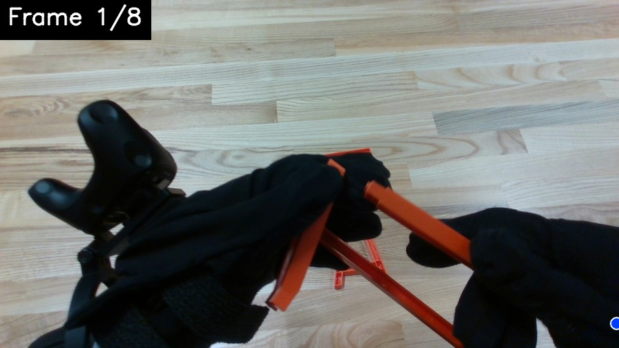 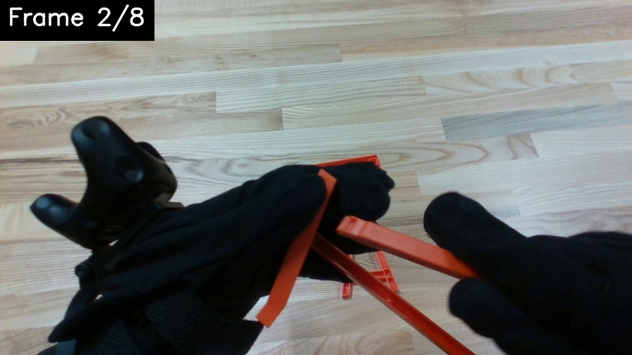 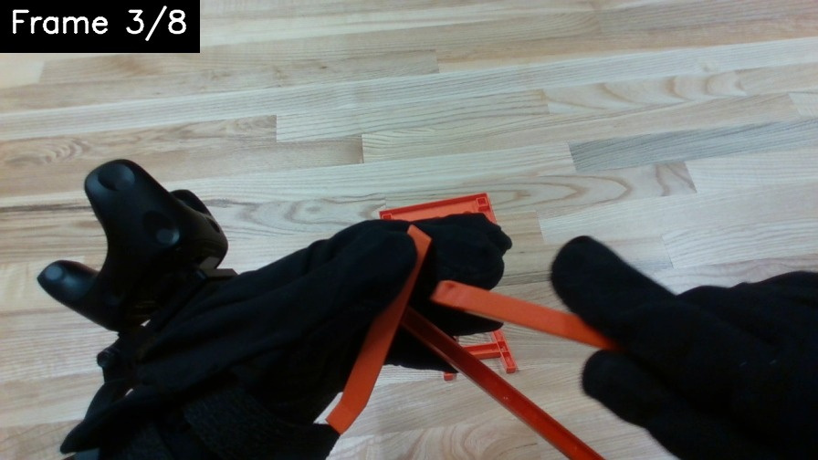 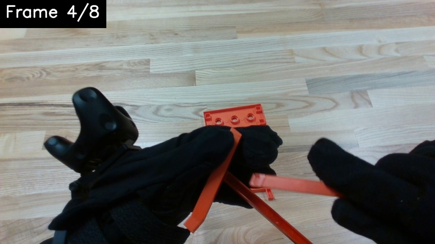 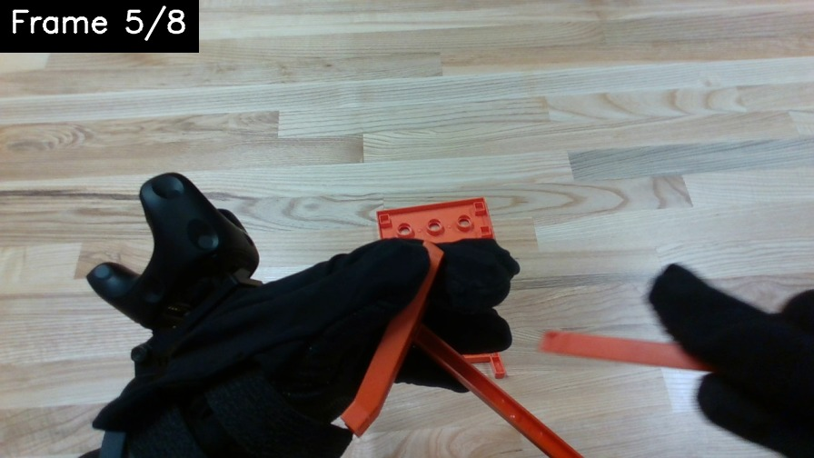 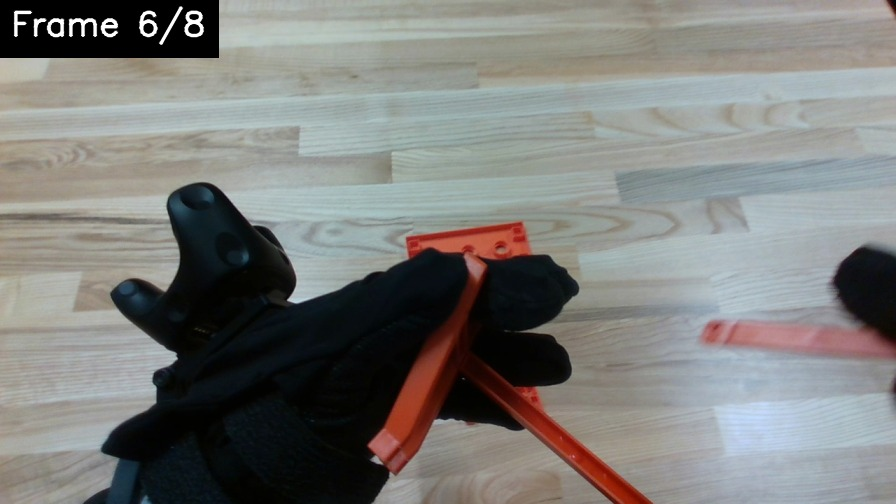 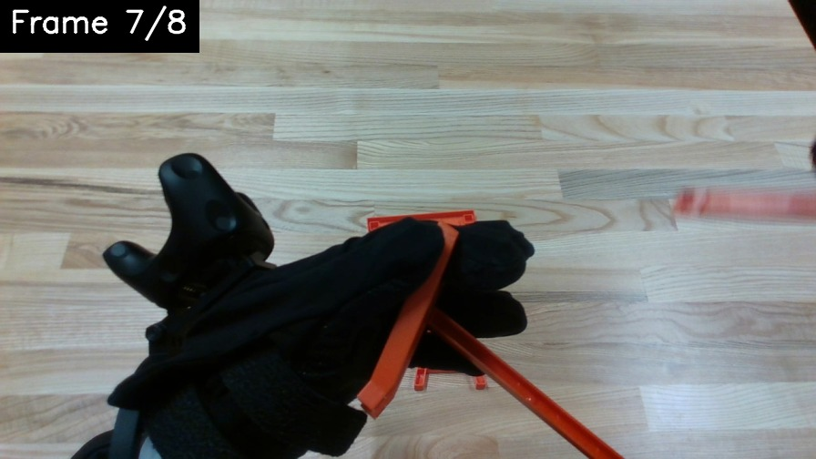 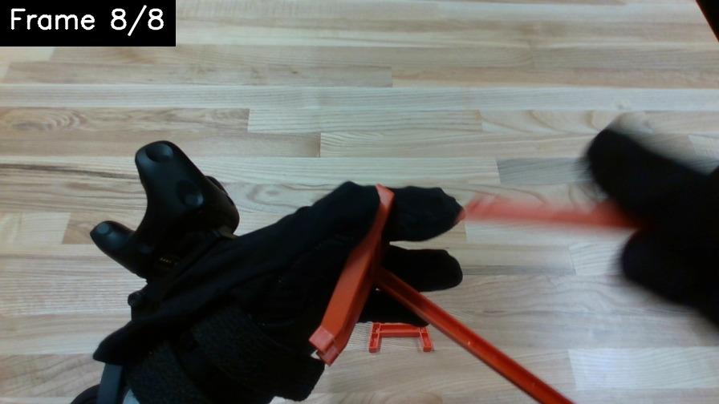 | Remove the orange plastic piece.thinkThe sequence shows the right hand holding an orange plastic piece and moving it away from the left hand, which is holding a larger orange structure. The trajectory indicates a clear separation motion, where the right hand detaches the small piece from the assembly and moves it out of the frame to the right. This action is best described as removing or taking off the piece. | Place the orange stick on the desk.thinkThe sequence begins with the right hand holding an orange stick near the left hand, which is holding the H-shaped piece. In frames 2 through 5, the right hand pulls the stick away from the assembly, clearly separating it. By frames 6 through 8, the right hand moves the stick further away and places it down on the desk surface, completing the action of removing the part. | Place the orange stick on the desk. objects: orange stick
thinkThe sequence shows the right hand holding an orange stick and attempting to insert it into the H-shaped piece held by the left hand. From Frame 1 to Frame 4, the right hand aligns the stick with the hole. In Frame 5, the stick is pulled away, indicating a failed insertion or adjustment. By Frame 6 to Frame 8, the right hand moves the stick away from the assembly and places it down on the desk surface. | Remove the orange H-shaped piece. VLM wrote: Remove the orange plastic piece.
thinkThe sequence shows the right hand holding an orange plastic piece and moving it away from the left hand, which is holding a larger orange structure. The trajectory indicates a clear separation motion, where the right hand detaches the small piece from the assembly and moves it out of the frame to the right. This action is best described as removing or taking off the piece. | Remove the orange stick from the orange H-shaped piece. objects: orange stick, orange H-shaped piece
thinkThe right hand is holding an orange stick and appears to be pulling it away from the H-shaped piece held by the left hand. From Frame 1 to Frame 8, the right hand moves the stick progressively farther away, indicating a disassembly or removal action. The trajectory shows clear motion away from the assembly, with no re-engagement. The object being manipulated is the orange stick, and the intent is to separate it from the H-shaped piece. | Remove the orange stick. VLM wrote: Remove the orange plastic piece.
thinkThe sequence shows the right hand holding an orange plastic piece and moving it away from the left hand, which is holding a larger orange structure. The trajectory indicates a clear separation motion, where the right hand detaches the small piece from the assembly and moves it out of the frame to the right. This action is best described as removing or taking off the piece. |
| #7 45.09–46.19 s 1.10 s · 12 cm | 8 frames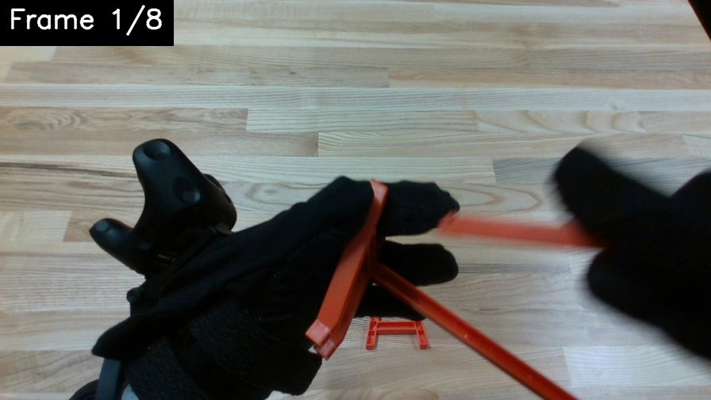 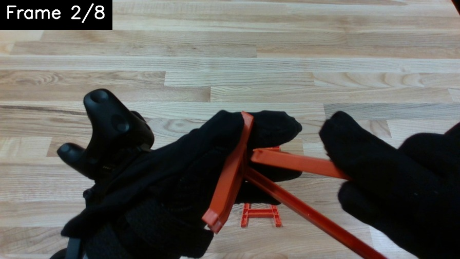 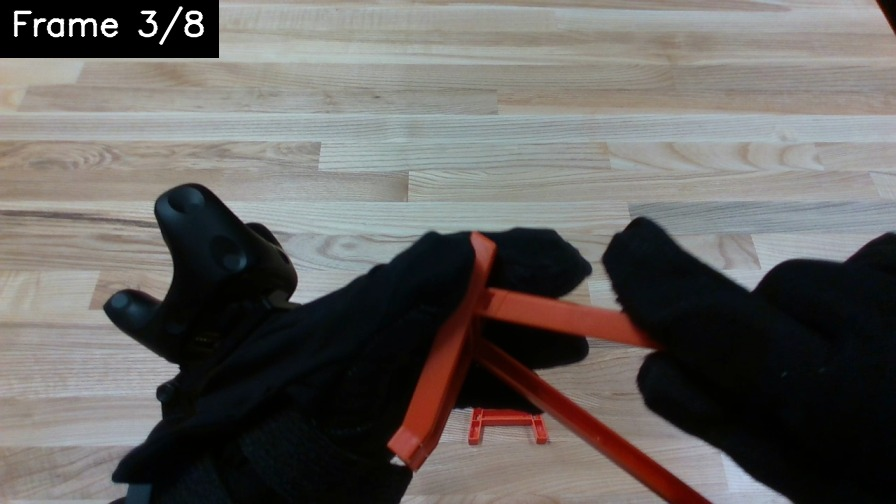 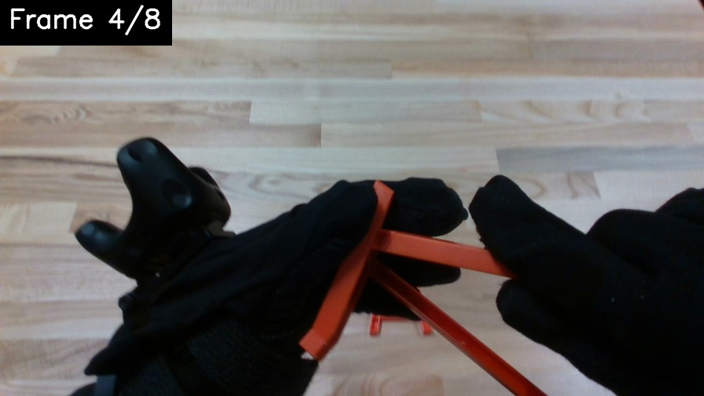 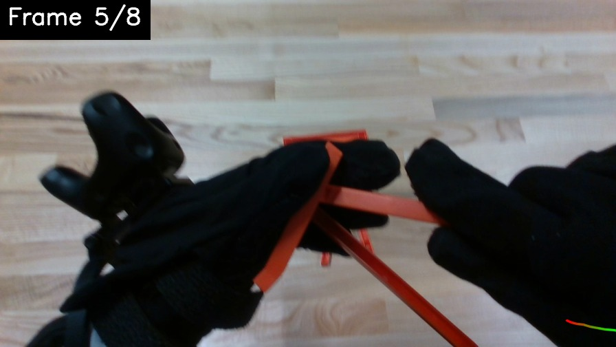 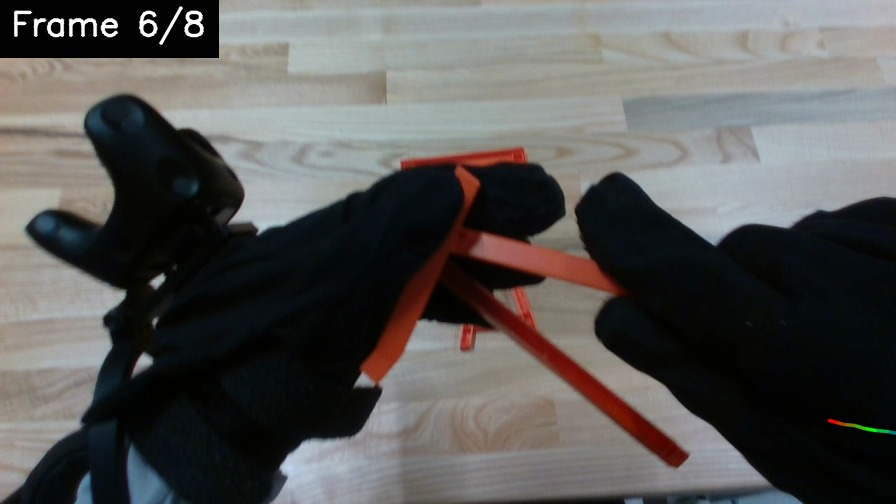 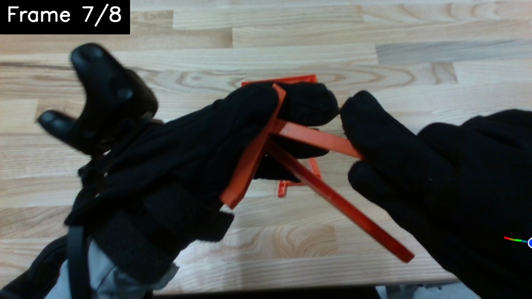 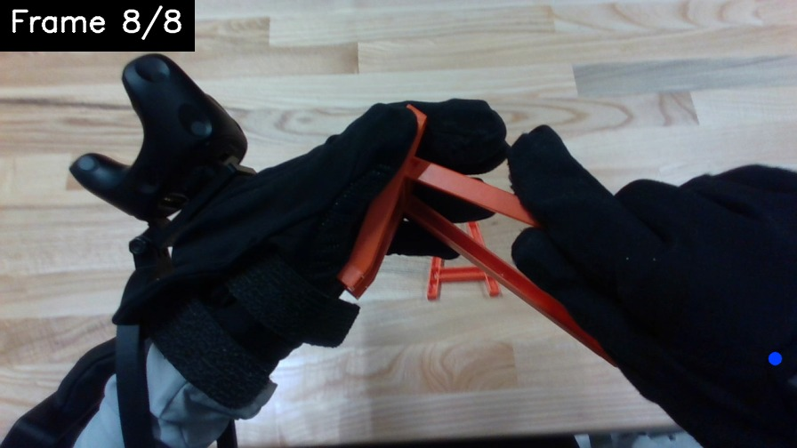 | Insert the orange rod into the plastic structure.thinkThe video sequence shows a right hand (wearing a black glove) holding an orange plastic rod and inserting it into a slot on an orange plastic structure held by the left hand. The trajectory indicates a deliberate movement to align and push the rod into place, completing an assembly step. The action is clearly 'inserting' or 'placing' the rod into the structure. | Insert the orange stick into the orange H-shaped piece.thinkThe left hand holds an orange H-shaped piece steady. The right hand picks up an orange stick and aligns it with the hole in the H-shaped piece. Over the sequence, the right hand pushes the stick into the hole to connect the parts. | Insert the orange stick into the orange H-shaped piece. objects: orange stick, orange H-shaped piece
thinkThe right hand (black glove) is seen holding an orange stick and moving it toward the left hand, which holds an orange H-shaped piece. The trajectory shows the right hand aligning and pressing the stick into the H-shaped piece’s hole — a clear assembly action. The stick is inserted into the H-frame, consistent with the task of assembling the toy table. No other objects are interacted with by the right hand in this sequence. | Insert the orange stick into the plastic structure. VLM wrote: Insert the orange rod into the plastic structure.
thinkThe video sequence shows a right hand (wearing a black glove) holding an orange plastic rod and inserting it into a slot on an orange plastic structure held by the left hand. The trajectory indicates a deliberate movement to align and push the rod into place, completing an assembly step. The action is clearly 'inserting' or 'placing' the rod into the structure. | Insert the orange stick into the orange H-shaped piece. objects: orange stick, orange H-shaped piece
thinkThe right hand (black-gloved, with motion tracker visible) is shown in all 8 frames actively manipulating an orange stick. In Frame 1, the right hand is blurred, indicating motion toward or into position. From Frame 2 onward, it clearly grips and pushes the orange stick into a hole on the orange H-shaped piece held by the left hand. The trajectory shows progressive insertion — the stick moves from being aligned to fully seated in the H-piece’s peg hole. No other object is interacted with by the right hand. The action is unambiguous: inserting the stick into the H-piece as part of assembling the toy table. | Insert the orange rod into the plastic structure.
thinkThe video sequence shows a right hand (wearing a black glove) holding an orange plastic rod and inserting it into a slot on an orange plastic structure held by the left hand. The trajectory indicates a deliberate movement to align and push the rod into place, completing an assembly step. The action is clearly 'inserting' or 'placing' the rod into the structure. |
| #8 55.75–56.95 s 1.20 s · 25 cm | 8 frames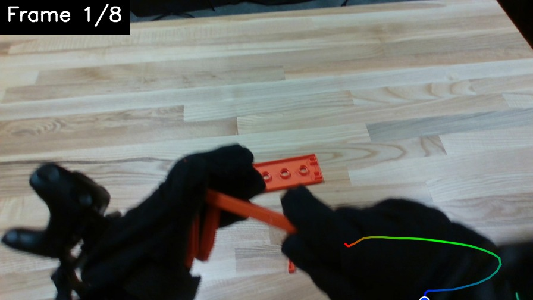 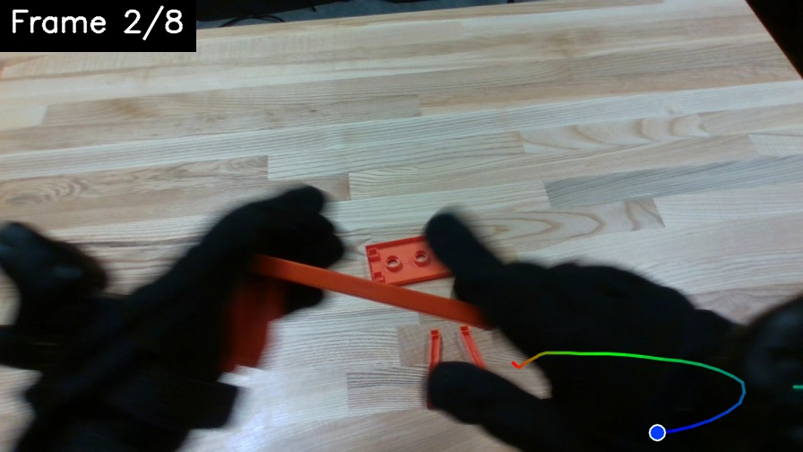 | Pick the orange plastic stand.thinkThe right hand (indicated by the blue dot and trajectory) is initially positioned near the table surface. As the sequence progresses from Frame 1 to Frame 8, the right hand moves towards a small orange plastic piece (resembling a stand or leg) lying on the table. By the final frames, the right hand has closed around this specific object, indicating a successful grasp. The left hand is holding other pieces but is ignored per instructions. | Pick up the orange H-shaped piece.thinkThe right hand (indicated by the trajectory ending in a blue dot) starts in a position near the center and moves towards the bottom right of the frame. In the final frames (6-8), the hand clearly grasps the orange H-shaped piece lying on the desk. The left hand is holding other parts of the assembly but is ignored per instructions. The action is a clear grasp of the specific object. | Pick up the orange H-shaped piece. objects: orange H-shaped piece
thinkThe right hand (indicated by the blue dot and trajectory) starts near the center and moves towards the bottom right of the frame. In the final frames (7 and 8), the right hand clearly grasps the orange H-shaped piece lying on the desk. The left hand is holding the other parts (sticks and plate) and remains relatively stationary. Therefore, the action is the right hand picking up the H-shaped piece. | Pick the orange H-shaped piece. VLM wrote: Pick the orange plastic stand.
thinkThe right hand (indicated by the blue dot and trajectory) is initially positioned near the table surface. As the sequence progresses from Frame 1 to Frame 8, the right hand moves towards a small orange plastic piece (resembling a stand or leg) lying on the table. By the final frames, the right hand has closed around this specific object, indicating a successful grasp. The left hand is holding other pieces but is ignored per instructions. | Pick up the orange H-shaped piece. objects: orange H-shaped piece
thinkThe right hand (indicated by the blue dot and trajectory) starts near the center and moves towards the bottom right of the frame. In the final frames (7 and 8), the right hand clearly grasps the orange H-shaped piece lying on the desk. The left hand is holding the orange stick assembly, but the specific action of the right hand is to pick up the H-shaped piece. | Pick up the orange H-shaped piece. VLM wrote: Pick the orange plastic stand.
thinkThe right hand (indicated by the blue dot and trajectory) is initially positioned near the table surface. As the sequence progresses from Frame 1 to Frame 8, the right hand moves towards a small orange plastic piece (resembling a stand or leg) lying on the table. By the final frames, the right hand has closed around this specific object, indicating a successful grasp. The left hand is holding other pieces but is ignored per instructions. |
| #9 58.32–60.45 s 2.13 s · 30 cm | 8 frames | Pick up the orange plastic piece.thinkThe sequence begins with the right hand reaching for and picking up an orange plastic component from the table (Frames 1-3). The hand then lifts this object and moves it out of the frame to the right (Frames 4-6). Finally, the right hand is seen moving away from the table area, leaving the remaining orange piece behind (Frames 7-8). | Pick up the orange H-shaped piece and attach it to the orange stick held by the left hand.thinkThe sequence begins with the right hand reaching for and picking up an orange H-shaped piece from the desk (Frames 1-3). The hand then lifts this piece and moves it towards the left hand, which is holding the rest of the assembly, to connect the parts (Frames 4-5). Finally, the right hand places the connected assembly back onto the desk (Frames 6-8). | Pick up the orange H-shaped piece and attempt to insert it into the stick assembly. objects: orange H-shaped piece
thinkThe right hand starts near the desk surface and moves to grasp an orange H-shaped piece lying on the desk. It lifts the piece and brings it towards the left hand, which is holding a stick assembly. The right hand then attempts to align and insert the H-shaped piece into the stick assembly, but the action is interrupted or adjusted as the hands move apart again. The primary action is the right hand picking up and attempting to assemble the H-shaped piece. | Pick up the orange plastic H piece. VLM wrote: Pick up the orange plastic piece.
thinkThe sequence begins with the right hand reaching for and picking up an orange plastic component from the table (Frames 1-3). The hand then lifts this object and moves it out of the frame to the right (Frames 4-6). Finally, the right hand is seen moving away from the table area, leaving the remaining orange piece behind (Frames 7-8). | Pick up the orange H-shaped piece. objects: orange H-shaped piece
thinkThe right hand starts near the orange H-shaped piece on the desk. It moves to grasp the piece, lifts it, and brings it closer to the center where the left hand is holding other parts. The trajectory shows a clear pick-up motion followed by a movement towards the assembly area. The object is clearly an orange H-shaped piece. | Pick up the orange H-shaped piece. VLM wrote: Pick up the orange plastic piece.
thinkThe sequence begins with the right hand reaching for and picking up an orange plastic component from the table (Frames 1-3). The hand then lifts this object and moves it out of the frame to the right (Frames 4-6). Finally, the right hand is seen moving away from the table area, leaving the remaining orange piece behind (Frames 7-8). |
| #10 66.75–68.55 s 1.80 s · 19 cm | 8 frames | Lift the orange frame from the orange plate.thinkThe video sequence shows the right hand (indicated by the blue dot and trajectory) initially holding an orange plastic frame structure. As the frames progress, the right hand moves the frame away from a flat orange plate resting on the table, effectively separating the two objects. The action concludes with the right hand holding the frame upright while the plate remains on the surface. | Insert the orange stick into the orange H-shaped piece.thinkThe sequence begins with the right hand holding an orange stick and inserting it into the holes of an orange H-shaped piece held by the left hand. As the frames progress, the right hand continues to push the stick firmly into place, completing the connection between the two parts. By the final frames, the right hand releases the stick, leaving the two pieces connected as a single unit. | Pull the orange stick out of the orange H-shaped piece and place it on the desk. objects: orange stick, orange H-shaped piece
thinkThe right hand is initially seen holding an orange stick that is inserted into an orange H-shaped piece. Over the sequence, the right hand pulls the stick out of the H-shaped piece and then releases it, leaving the stick on the desk while continuing to hold the H-shaped piece. The trajectory shows the hand moving away from the stick after disengaging it. | Lift the orange H frame from the orange plate. VLM wrote: Lift the orange frame from the orange plate.
thinkThe video sequence shows the right hand (indicated by the blue dot and trajectory) initially holding an orange plastic frame structure. As the frames progress, the right hand moves the frame away from a flat orange plate resting on the table, effectively separating the two objects. The action concludes with the right hand holding the frame upright while the plate remains on the surface. | Pick up the orange H-shaped piece. objects: orange H-shaped piece
thinkThe right hand (blue dot trajectory) starts near the orange H-shaped piece in Frame 1, then moves away and back toward it across frames 2–5. By Frame 6, the right hand is clearly gripping the H-shaped piece while the left hand releases it. In Frames 7–8, the right hand holds the H-shaped piece upright as the left hand gestures nearby. The action centers on the right hand taking control of the H-shaped piece after initial joint manipulation. | Lift the orange H frame from the orange plate. VLM wrote: Lift the orange frame from the orange plate.
thinkThe video sequence shows the right hand (indicated by the blue dot and trajectory) initially holding an orange plastic frame structure. As the frames progress, the right hand moves the frame away from a flat orange plate resting on the table, effectively separating the two objects. The action concludes with the right hand holding the frame upright while the plate remains on the surface. |
| #12 80.99–82.62 s 1.63 s · 16 cm | 8 frames | Hold the orange plastic structure.thinkThe video sequence shows the right hand holding an orange plastic structure. In Frame 1, the hand is holding the object. In Frame 2, the hand moves away, leaving a flat orange piece on the table, indicating a separation or placement action. From Frame 3 to Frame 8, the right hand continues to hold the remaining part of the orange structure while the flat piece remains stationary on the table. The action is best described as the right hand holding and manipulating the orange object. | Hold the orange H-shaped piece.thinkIn Frame 1, the right hand is holding an orange H-shaped piece while the left hand holds the orange plate. In Frame 2, the left hand releases the plate onto the desk, while the right hand retains the H-shaped piece. From Frame 3 to Frame 8, the right hand continues to hold the H-shaped piece in a stationary position near the bottom of the frame, while the orange plate remains on the desk. The trajectory indicates the hand is holding the object rather than moving it to a new location. | Hold the orange H-shaped piece. objects: orange H-shaped piece
thinkIn Frame 1, the right hand is holding an orange H-shaped piece (part of the toy table assembly). From Frame 2 to Frame 8, the right hand moves away from the orange plate on the desk and continues to hold the H-shaped piece without placing it down or interacting with any other object. The trajectory shows no clear intent to pick up or place the plate — the hand remains occupied with the H-piece. No new object is approached or manipulated by the right hand during this sequence. | Hold the orange toy table. VLM wrote: Hold the orange plastic structure.
thinkThe video sequence shows the right hand holding an orange plastic structure. In Frame 1, the hand is holding the object. In Frame 2, the hand moves away, leaving a flat orange piece on the table, indicating a separation or placement action. From Frame 3 to Frame 8, the right hand continues to hold the remaining part of the orange structure while the flat piece remains stationary on the table. The action is best described as the right hand holding and manipulating the orange object. | Hold the orange H-shaped piece. objects: orange H-shaped piece
thinkIn Frame 1, the right hand is holding an orange H-shaped piece. In Frame 2, the right hand moves away from the orange plate which is now on the desk, while still holding the H-shaped piece. From Frame 3 to Frame 8, the right hand continues to hold the orange H-shaped piece, moving it slightly but not interacting with any other object. The trajectory shows the right hand moving away from the orange plate and then stabilizing while holding the H-shaped piece. | Hold the orange toy table. VLM wrote: Hold the orange plastic structure.
thinkThe video sequence shows the right hand holding an orange plastic structure. In Frame 1, the hand is holding the object. In Frame 2, the hand moves away, leaving a flat orange piece on the table, indicating a separation or placement action. From Frame 3 to Frame 8, the right hand continues to hold the remaining part of the orange structure while the flat piece remains stationary on the table. The action is best described as the right hand holding and manipulating the orange object. |
| #14 92.42–93.49 s 1.07 s · 15 cm | 8 frames | Place the orange frame on the table.thinkThe sequence begins with the right hand holding an orange plastic frame structure alongside the left hand. As the frames progress, the right hand pulls the frame away from the left hand and lowers it towards the table surface. By the final frames, the right hand has released the object, leaving it standing on the table. The action is a clear placement of the held object. | Place the orange H-shaped piece on the desk.thinkThe sequence begins with the right hand holding an orange H-shaped piece (part of the toy table legs) in conjunction with the left hand. As the frames progress, the hands separate, and the right hand lowers the H-shaped piece onto the wooden desk surface. By the final frames, the right hand has released the object and is moving away, leaving the piece resting on the desk next to the orange plate. | Place the orange H-shaped piece on the desk. objects: orange H-shaped piece
thinkThe sequence begins with the right hand holding an orange H-shaped piece (Frame 1). The hand then moves this piece towards the desk surface where an orange plate is already resting (Frames 2-4). By Frame 5, the right hand places the H-shaped piece onto the desk next to the plate and releases it, remaining stationary near the object for the rest of the clip (Frames 6-8). The action is a clear placement of the held component onto the work surface. | Place the orange H frame on the desk. VLM wrote: Place the orange frame on the table.
thinkThe sequence begins with the right hand holding an orange plastic frame structure alongside the left hand. As the frames progress, the right hand pulls the frame away from the left hand and lowers it towards the table surface. By the final frames, the right hand has released the object, leaving it standing on the table. The action is a clear placement of the held object. | Place the orange H-shaped piece on the desk. objects: orange H-shaped piece
thinkThe right hand initially holds the orange H-shaped piece (Frames 1-3). In Frame 4, the right hand releases the object onto the desk surface. From Frame 5 to Frame 8, the right hand moves away from the object, leaving it on the desk. The action is a release or placement of the held object. | Place the orange H frame on the desk. VLM wrote: Place the orange frame on the table.
thinkThe sequence begins with the right hand holding an orange plastic frame structure alongside the left hand. As the frames progress, the right hand pulls the frame away from the left hand and lowers it towards the table surface. By the final frames, the right hand has released the object, leaving it standing on the table. The action is a clear placement of the held object. |
| #15 94.39–95.69 s 1.30 s · 18 cm | 8 frames | Pick the orange rectangular object.thinkThe right hand (indicated by the blue dot and trajectory) starts in an open position away from the objects. Over the sequence, the hand moves forward and slightly left, closing its fingers as it approaches the orange rectangular object with holes. By the final frames, the hand is positioned directly over the object with fingers curled, indicating an intent to grasp or pick it up. | Move the right hand towards the orange plate.thinkThe right hand starts in an open position away from the objects and moves towards the orange plate on the desk. The trajectory shows a deliberate approach, and in the final frames, the hand hovers directly over the plate with fingers slightly curled, indicating an intent to grasp or interact with it. No object is currently held, and the motion is clearly directed at the plate. | Move the right hand toward the orange plate. objects: orange plate
thinkThe right hand (indicated by the blue dot and trajectory) starts in an open, hovering position above the desk. Over the sequence of frames, the hand moves forward and downward, extending its fingers towards the orange plate lying on the desk. By the final frames, the hand is positioned directly over the plate, indicating a clear intent to grasp or pick it up, but the actual contact and lifting have not yet occurred in this clip. | Pick the rectangular orange plate. VLM wrote: Pick the orange rectangular object.
thinkThe right hand (indicated by the blue dot and trajectory) starts in an open position away from the objects. Over the sequence, the hand moves forward and slightly left, closing its fingers as it approaches the orange rectangular object with holes. By the final frames, the hand is positioned directly over the object with fingers curled, indicating an intent to grasp or pick it up. | Pick the orange plate. objects: orange plate
thinkThe right hand (indicated by the blue dot and trajectory) starts in an open position away from the objects. Over the sequence of frames, the hand moves forward and slightly left, closing its fingers as it approaches the orange plate. By the final frames, the hand is positioned directly over the plate, indicating an intent to grasp or pick it up. | Pick up the rectangular orange plate. VLM wrote: Pick the orange rectangular object.
thinkThe right hand (indicated by the blue dot and trajectory) starts in an open position away from the objects. Over the sequence, the hand moves forward and slightly left, closing its fingers as it approaches the orange rectangular object with holes. By the final frames, the hand is positioned directly over the object with fingers curled, indicating an intent to grasp or pick it up. |
| #17 97.85–98.85 s 1.00 s · 18 cm | 8 frames | Place the orange rectangular piece onto the orange frame.thinkThe right hand (indicated by the blue dot and trajectory) starts by holding an orange rectangular object on the right side of the frame. The trajectory shows the hand moving the object leftward towards an orange frame structure. In the final frames, the hand places the rectangular object onto the frame structure, completing the assembly. | Attach the orange plate to the orange H-shaped piece.thinkThe right hand starts by holding an orange plate on the desk. It lifts the plate and moves it towards the orange H-shaped piece held by the left hand. The trajectory shows the hand aligning the plate with the legs of the H-piece and pressing it down to attach it, completing the assembly of the toy table. | Place the orange plate onto the orange H-shaped piece. objects: orange plate, orange H-shaped piece
thinkThe right hand starts by holding an orange plate on the desk. It lifts the plate and moves it towards the orange H-shaped piece held by the left hand. The trajectory shows the hand positioning the plate over the H-piece and pressing it down to attach it, completing the assembly of the toy table. | Place the rectangular orange plate onto the orange H frame. VLM wrote: Place the orange rectangular piece onto the orange frame.
thinkThe right hand (indicated by the blue dot and trajectory) starts by holding an orange rectangular object on the right side of the frame. The trajectory shows the hand moving the object leftward towards an orange frame structure. In the final frames, the hand places the rectangular object onto the frame structure, completing the assembly. | Place the orange plate onto the orange H-shaped piece. objects: orange plate, orange H-shaped piece
thinkThe right hand (marked by blue dot and trajectory) starts near an orange plate on the desk. From Frame 1 to Frame 8, the hand moves toward the plate, grasps it, lifts it slightly, and positions it over the orange H-shaped piece (which is already assembled with a stick). The motion trajectory shows a clear path from right to center, ending with the plate being placed onto the H-frame. The left hand remains stationary and does not interact. The action is clearly the right hand picking up and placing the orange plate onto the toy table assembly. | Place the rectangular orange plate onto the orange H frame. VLM wrote: Place the orange rectangular piece onto the orange frame.
thinkThe right hand (indicated by the blue dot and trajectory) starts by holding an orange rectangular object on the right side of the frame. The trajectory shows the hand moving the object leftward towards an orange frame structure. In the final frames, the hand places the rectangular object onto the frame structure, completing the assembly. |
| #18 100.15–103.29 s 3.13 s · 16 cm | 8 frames | Place the orange stool upright.thinkThe sequence begins with the right hand releasing an orange object (Frame 1-2) and then re-grasping it (Frame 3). The right hand then lifts the object, which is a small orange stool, and rotates it to an upright position (Frame 4-6). Finally, the right hand stabilizes the stool in its upright orientation (Frame 7-8). The primary action is the manipulation and placement of the stool. | Lift the orange plate and hold it upright.thinkThe sequence begins with the right hand releasing an orange plate onto the desk (Frame 1-2). The right hand then moves to grasp the right side of the plate (Frame 3) and lifts it, rotating it into a vertical orientation (Frame 4-5). Finally, the right hand holds the plate steady in this upright position while the left hand approaches to interact with it (Frame 6-8). | Pick up the orange H-shaped piece and rotate it vertically. objects: orange H-shaped piece
thinkThe sequence begins with the right hand holding an orange H-shaped piece (Frame 1) and placing it on the desk (Frame 2). The hand then moves to the right side of the object (Frame 3) and proceeds to lift the H-shaped piece from the desk (Frames 4-5). Finally, the right hand holds the piece in the air and rotates it to a vertical orientation (Frames 6-8), preparing it for assembly. | Place the orange toy table upright. VLM wrote: Place the orange stool upright.
thinkThe sequence begins with the right hand releasing an orange object (Frame 1-2) and then re-grasping it (Frame 3). The right hand then lifts the object, which is a small orange stool, and rotates it to an upright position (Frame 4-6). Finally, the right hand stabilizes the stool in its upright orientation (Frame 7-8). The primary action is the manipulation and placement of the stool. | Place the orange plate on the desk, then pick it up. objects: orange plate
thinkThe sequence begins with the right hand holding an orange plate (Frame 1) and placing it onto the wooden surface (Frame 2). The hand then releases the object (Frame 3) and subsequently moves to grasp the orange plate again (Frame 4), lifting it and rotating it to a vertical orientation (Frames 5-8). The primary action sequence involves placing the object down and then picking it back up. | Place the orange toy table upright. VLM wrote: Place the orange stool upright.
thinkThe sequence begins with the right hand releasing an orange object (Frame 1-2) and then re-grasping it (Frame 3). The right hand then lifts the object, which is a small orange stool, and rotates it to an upright position (Frame 4-6). Finally, the right hand stabilizes the stool in its upright orientation (Frame 7-8). The primary action is the manipulation and placement of the stool. |
| #19 111.59–112.95 s 1.37 s · 20 cm | 8 frames | Push the orange block.thinkThe right hand (indicated by the blue dot and trajectory) approaches an orange block on the table. The trajectory shows the hand moving from right to left, making contact with the block, and then pushing it slightly to the left. The hand maintains contact and continues to push the object throughout the sequence. | Attach the orange H-shaped piece to the orange plate.thinkThe right hand is shown holding an orange H-shaped piece (a table leg component) and pressing it against the orange plate (the tabletop) which is held by the left hand. The trajectory indicates a downward and forward motion, consistent with the action of fitting or snapping the leg into the holes of the plate to assemble the toy table. | Place the orange H-shaped piece on the desk. objects: orange H-shaped piece
thinkThe right hand (indicated by the trajectory ending in a blue dot) is shown interacting with an orange plastic object on the desk. In Frame 1, the hand is holding the object, which is identified as an 'orange H-shaped piece' based on its shape (legs and crossbar) and the holes visible on the top bar. From Frame 2 to Frame 8, the hand moves the object slightly and then places it down on the wooden surface, releasing its grip by the final frame. The action is a clear placement of the object onto the desk. | Push the orange stick. VLM wrote: Push the orange block.
thinkThe right hand (indicated by the blue dot and trajectory) approaches an orange block on the table. The trajectory shows the hand moving from right to left, making contact with the block, and then pushing it slightly to the left. The hand maintains contact and continues to push the object throughout the sequence. | Place the orange H-shaped piece on the desk. objects: orange H-shaped piece
thinkThe right hand (indicated by the blue dot and trajectory) is shown interacting with an orange plastic object on the desk. In Frame 1, the hand is holding the object, which is identified as an orange H-shaped piece based on its shape (legs and crossbar). From Frame 2 to Frame 8, the hand moves the object slightly and then releases it, leaving it resting on the desk. The action is primarily placing or setting down the object. | Push the orange plate. VLM wrote: Push the orange block.
thinkThe right hand (indicated by the blue dot and trajectory) approaches an orange block on the table. The trajectory shows the hand moving from right to left, making contact with the block, and then pushing it slightly to the left. The hand maintains contact and continues to push the object throughout the sequence. |
| #20 116.22–118.29 s 2.07 s · 25 cm | 8 frames | Grasp the orange stool.thinkThe sequence begins with the right hand approaching an orange stool on the table (Frames 1-2). The left hand then lifts the stool (Frame 3), and the right hand moves in to assist, eventually grasping the stool with both hands (Frames 4-7). Finally, the right hand is seen holding the stool down on the table surface (Frame 8). The primary action of the right hand is to grasp and hold the object. | Press the orange toy table.thinkThe sequence begins with the right hand approaching an orange toy table assembly resting on the desk. The left hand holds the object steady while the right hand moves towards it, eventually making contact and pressing down on the structure in the final frames. The trajectory indicates a deliberate movement to secure or adjust the connection of the parts rather than picking the object up. | Hold the orange toy table. objects: orange toy table
thinkThe sequence begins with the right hand approaching an orange toy table assembly resting on the desk. The right hand moves towards the object and makes contact, eventually grasping it alongside the left hand. The hands then manipulate the object, lifting and rotating it slightly before placing it back down. The primary action of the right hand is to reach for and hold the toy table. | Grasp the orange toy table. VLM wrote: Grasp the orange stool.
thinkThe sequence begins with the right hand approaching an orange stool on the table (Frames 1-2). The left hand then lifts the stool (Frame 3), and the right hand moves in to assist, eventually grasping the stool with both hands (Frames 4-7). Finally, the right hand is seen holding the stool down on the table surface (Frame 8). The primary action of the right hand is to grasp and hold the object. | Place the orange toy table on the desk. objects: orange toy table
thinkThe right hand (marked by the blue dot and trajectory) starts open and moves toward the orange toy table held by the left hand. From Frame 3 to Frame 7, the right hand approaches and makes contact with the toy table, appearing to assist in stabilizing or adjusting it. In Frame 8, both hands are pressing down on the toy table, indicating the right hand is actively participating in placing or securing it on the desk. The action is clearly directed at the toy table, and the right hand’s motion is purposeful and interactive. | Grasp the orange toy table. VLM wrote: Grasp the orange stool.
thinkThe sequence begins with the right hand approaching an orange stool on the table (Frames 1-2). The left hand then lifts the stool (Frame 3), and the right hand moves in to assist, eventually grasping the stool with both hands (Frames 4-7). Finally, the right hand is seen holding the stool down on the table surface (Frame 8). The primary action of the right hand is to grasp and hold the object. |
| #22 129.29–130.92 s 1.63 s · 20 cm | 8 frames | Press the orange plastic piece into the assembly.thinkThe right hand (indicated by the blue dot and trajectory) starts on the right side of the table in Frame 1. It moves leftward across the table (Frames 2-3) towards an orange plastic piece held by the left hand. In Frame 4, the right hand makes contact with the object. From Frame 5 to Frame 8, the right hand firmly grasps and manipulates the orange piece, appearing to press or snap it into the larger assembly held by the left hand. | Attach the orange H-shaped piece to the orange plate.thinkThe right hand starts on the right side of the frame and moves leftward to grasp an orange H-shaped piece lying on the desk. It then lifts this piece and brings it into contact with the orange plate held by the left hand. The subsequent frames show the right hand pressing and adjusting the H-shaped piece against the plate, indicating an assembly action. | Pick up the orange H-shaped piece and press it into the other orange H-shaped piece held by the left hand. objects: orange H-shaped piece
thinkThe right hand starts open and moves toward an orange H-shaped piece lying on the desk. It grasps the piece and lifts it, bringing it to the left hand which is holding another orange H-shaped piece. The right hand then aligns and presses the two pieces together, likely to connect them via pegs or slots. The trajectory shows a clear pick-up and assembly motion. | Press the orange plastic piece into the toy table. VLM wrote: Press the orange plastic piece into the assembly.
thinkThe right hand (indicated by the blue dot and trajectory) starts on the right side of the table in Frame 1. It moves leftward across the table (Frames 2-3) towards an orange plastic piece held by the left hand. In Frame 4, the right hand makes contact with the object. From Frame 5 to Frame 8, the right hand firmly grasps and manipulates the orange piece, appearing to press or snap it into the larger assembly held by the left hand. | Insert the orange stick into the orange H-shaped piece. objects: orange stick, orange H-shaped piece
thinkThe right hand starts open and moves toward the orange stick lying on the desk. It closes around the stick, picks it up, and brings it to the orange H-shaped piece held by the left hand. The trajectory shows the hand inserting the stick into the H-shaped piece to connect them. | Press the orange H-shaped piece into the assembly. VLM wrote: Press the orange plastic piece into the assembly.
thinkThe right hand (indicated by the blue dot and trajectory) starts on the right side of the table in Frame 1. It moves leftward across the table (Frames 2-3) towards an orange plastic piece held by the left hand. In Frame 4, the right hand makes contact with the object. From Frame 5 to Frame 8, the right hand firmly grasps and manipulates the orange piece, appearing to press or snap it into the larger assembly held by the left hand. |
| #25 137.22–139.15 s 1.93 s · 23 cm | 8 frames | Pick the orange object.thinkThe video sequence shows a right hand wearing a black glove interacting with an orange object on a wooden table. In the initial frames (1-3), the hand is positioned over the object. By Frame 6, the hand has clearly grasped the orange object. In the final frames (7-8), the hand lifts the object off the table surface. The trajectory indicates a downward approach followed by an upward lift, consistent with a picking action. | Place the orange stick on the desk.thinkThe right hand is initially seen holding an orange stick on the desk in the first few frames. As the sequence progresses, the hand moves the stick towards the center of the desk and places it down, releasing the object by the final frame. The trajectory confirms a movement from a holding position to a resting position on the surface. | N/A objects: — thinkThe right hand, visible in black gloves, begins near two orange sticks on the desk (Frame 1). It moves slightly but does not grasp or lift them in Frames 2–3. By Frame 4, the hand is no longer interacting with the sticks and appears to be retracting or repositioning. In Frames 5–8, the hand remains idle or moves away from the objects without clear intent to pick up or manipulate. No sustained interaction or purposeful movement toward an object is observed. | Pick the orange stick. VLM wrote: Pick the orange object.
thinkThe video sequence shows a right hand wearing a black glove interacting with an orange object on a wooden table. In the initial frames (1-3), the hand is positioned over the object. By Frame 6, the hand has clearly grasped the orange object. In the final frames (7-8), the hand lifts the object off the table surface. The trajectory indicates a downward approach followed by an upward lift, consistent with a picking action. | Pick up the orange stick, move it slightly, and place it back on the desk. objects: orange stick
thinkIn Frame 1, the right hand is positioned near two orange sticks on the desk. By Frame 2, the hand begins to grasp one of the orange sticks. In Frame 3, the stick is fully held and lifted slightly. Frames 4–5 show the hand moving away from the initial position, carrying the stick. In Frame 6, the hand returns toward the desk surface, still holding the stick. Frames 7–8 show the hand placing or positioning the stick back down near its original location, possibly aligning it with another object (though not clearly visible). The trajectory and motion indicate a pick-up, brief transport, and re-placement of the orange stick. | Pick up the orange stick. VLM wrote: Pick the orange object.
thinkThe video sequence shows a right hand wearing a black glove interacting with an orange object on a wooden table. In the initial frames (1-3), the hand is positioned over the object. By Frame 6, the hand has clearly grasped the orange object. In the final frames (7-8), the hand lifts the object off the table surface. The trajectory indicates a downward approach followed by an upward lift, consistent with a picking action. |
| #26 150.09–151.55 s 1.47 s · 16 cm | 8 frames | Separate the orange plastic piece.thinkThe sequence shows the right hand holding an orange plastic piece and pulling it away from a vertical orange piece held by the left hand. The trajectory indicates a distinct separation motion, resulting in the right hand holding a detached segment of the orange object. This is a clear disassembly or separation action. | Pull the orange stick out of the H-shaped piece.thinkIn Frame 1, the right hand is holding an orange stick that is inserted into an H-shaped piece held by the left hand. From Frame 2 to Frame 6, the right hand pulls the stick backward, disengaging it from the H-piece. By Frame 7 and 8, the stick is fully separated and the right hand holds it independently while moving slightly away. The trajectory (blue to red) confirms a continuous pulling motion away from the assembly. | Pull the orange stick from the orange H-shaped piece. objects: orange stick, orange H-shaped piece
thinkThe right hand is holding an orange stick and pulling it away from the orange H-shaped piece held by the left hand. The trajectory shows a clear separation motion, and by the final frames, the stick is fully detached and held separately. This corresponds to the disassembly of the toy table parts. | Separate the orange H-shaped piece. VLM wrote: Separate the orange plastic piece.
thinkThe sequence shows the right hand holding an orange plastic piece and pulling it away from a vertical orange piece held by the left hand. The trajectory indicates a distinct separation motion, resulting in the right hand holding a detached segment of the orange object. This is a clear disassembly or separation action. | Remove the orange stick from the orange H-shaped piece. objects: orange stick, orange H-shaped piece
thinkThe sequence begins with the right hand holding an orange stick that is inserted into an orange H-shaped piece held by the left hand. As the frames progress, the right hand pulls the stick backward, disengaging it from the H-shaped piece. By the final frames, the stick is completely removed and held separately in the right hand. The action is a clear disassembly or removal of the stick from the frame. | Separate the orange stick. VLM wrote: Separate the orange plastic piece.
thinkThe sequence shows the right hand holding an orange plastic piece and pulling it away from a vertical orange piece held by the left hand. The trajectory indicates a distinct separation motion, resulting in the right hand holding a detached segment of the orange object. This is a clear disassembly or separation action. |
| #27 152.42–154.29 s 1.87 s · 16 cm | 8 frames | Insert the orange T-shaped piece into the orange component.thinkThe sequence begins with the right hand reaching towards a loose orange T-shaped plastic piece on the table (Frames 1-3). The right hand then grasps the piece and lifts it (Frame 4). Finally, the right hand brings the piece to the left hand, which is holding a larger orange component, and inserts the T-piece into it to assemble the structure (Frames 5-8). | Pick up the orange stick and bring it to the orange H-shaped piece.thinkThe right hand (indicated by the trajectory overlay) starts near the desk surface and moves to grasp an orange stick lying among other parts. It then lifts the stick and brings it towards the left hand, which is holding an orange H-shaped piece. The sequence ends with the right hand positioning the stick to connect with the H-shaped piece held by the left hand. | Insert the orange stick into the orange H-shaped piece. objects: orange stick, orange H-shaped piece
thinkThe right hand (indicated by the trajectory overlay) starts open and moves towards an orange stick lying on the desk. It grasps the stick and lifts it, then moves it towards the left hand which is holding an orange H-shaped piece. The right hand then aligns and pushes the end of the orange stick into the hole of the H-shaped piece to assemble them. | Insert the orange H-shaped piece into the orange component. VLM wrote: Insert the orange T-shaped piece into the orange component.
thinkThe sequence begins with the right hand reaching towards a loose orange T-shaped plastic piece on the table (Frames 1-3). The right hand then grasps the piece and lifts it (Frame 4). Finally, the right hand brings the piece to the left hand, which is holding a larger orange component, and inserts the T-piece into it to assemble the structure (Frames 5-8). | Pick up the orange stick and insert it into the orange H-shaped piece. objects: orange stick, orange H-shaped piece
thinkThe right hand starts open and moves toward an orange stick lying on the desk. It grasps the stick, lifts it slightly, and then inserts one end into the hole of an orange H-shaped piece held by the left hand. The trajectory shows a clear pick-up motion followed by a precise insertion action. | Insert the orange stick into the orange H-shaped piece. VLM wrote: Insert the orange T-shaped piece into the orange component.
thinkThe sequence begins with the right hand reaching towards a loose orange T-shaped plastic piece on the table (Frames 1-3). The right hand then grasps the piece and lifts it (Frame 4). Finally, the right hand brings the piece to the left hand, which is holding a larger orange component, and inserts the T-piece into it to assemble the structure (Frames 5-8). |
| #28 160.22–162.95 s 2.73 s · 19 cm | 8 frames | Pick up the orange stick and place it on the table.thinkThe video sequence shows the right hand (indicated by the trajectory overlay) reaching for and grasping an orange plastic stick from the table. The hand then lifts the object and moves it slightly to the right before releasing it back onto the surface. The action is a clear pick-and-place motion involving the orange stick. | Pick up the orange stick and place it on the desk.thinkThe right hand (indicated by the blue dot and trajectory) starts near the orange stick on the desk. In Frame 2, the hand moves to grasp the stick. In Frame 3, the hand lifts the stick slightly. By Frame 4, the hand releases the stick, placing it back onto the desk. The trajectory confirms a pick-up and immediate release motion. The left hand holds other pieces but is ignored per instructions. | N/A objects: — thinkThe right hand (indicated by the blue dot and trajectory) starts near the desk surface and moves slightly to the right, hovering over the scattered orange parts. Throughout the sequence, the right hand remains open and does not make contact with or grasp any of the orange sticks or H-shaped pieces. The left hand is holding an orange stick, but the right hand does not interact with it or any other object. Since there is no clear interaction or purposeful movement toward a specific object to pick or place, the action is N/A. | Pick up the orange stick and place it on the desk. VLM wrote: Pick up the orange stick and place it on the table.
thinkThe video sequence shows the right hand (indicated by the trajectory overlay) reaching for and grasping an orange plastic stick from the table. The hand then lifts the object and moves it slightly to the right before releasing it back onto the surface. The action is a clear pick-and-place motion involving the orange stick. | Place the orange stick on the desk. objects: orange stick
thinkIn Frame 1, the right hand is holding an orange stick. In Frame 2, the right hand moves the stick towards the desk surface. By Frame 3, the stick is released and rests on the desk. The trajectory (blue to red) confirms a downward and releasing motion. The left hand holds another stick but is ignored per instructions. The action is clearly placing the stick on the desk. | Pick up the orange stick and place it on the desk. VLM wrote: Pick up the orange stick and place it on the table.
thinkThe video sequence shows the right hand (indicated by the trajectory overlay) reaching for and grasping an orange plastic stick from the table. The hand then lifts the object and moves it slightly to the right before releasing it back onto the surface. The action is a clear pick-and-place motion involving the orange stick. |
| #29 175.79–177.85 s 2.07 s · 16 cm | 8 frames | Pick up the orange plastic piece.thinkThe video sequence shows the right hand (indicated by the blue dot and trajectory) approaching a set of orange plastic pieces on a table. In frames 1 through 4, the hand moves towards the pieces. By frame 5, the fingers are closing around a specific long, thin orange piece. In frames 6 through 8, the right hand successfully grasps and lifts this orange piece off the table surface. | Pick the orange stick.thinkThe sequence begins with the right hand hovering over the desk where orange toy parts are scattered. In frames 1 through 4, the right hand moves towards a long, thin orange stick lying on the surface. By frame 5, the hand has closed around the stick, and in frames 6 through 8, it lifts the stick into the air, clearly completing a picking action. | Pick up the orange stick. objects: orange stick
thinkThe sequence begins with the right hand hovering over the desk where orange plastic parts are scattered. The hand trajectory moves towards an orange stick lying on the surface. In the final frames, the right hand is clearly shown grasping and lifting the orange stick vertically, separating it from the desk surface. | Pick up the orange H-shaped piece. VLM wrote: Pick up the orange plastic piece.
thinkThe video sequence shows the right hand (indicated by the blue dot and trajectory) approaching a set of orange plastic pieces on a table. In frames 1 through 4, the hand moves towards the pieces. By frame 5, the fingers are closing around a specific long, thin orange piece. In frames 6 through 8, the right hand successfully grasps and lifts this orange piece off the table surface. | Pick up the orange stick. objects: orange stick
thinkThe sequence begins with the right hand hovering near the orange sticks on the desk. As the frames progress, the hand moves closer and the fingers close around one of the orange sticks. By the final frames, the right hand has successfully grasped the stick and lifted it off the surface, while the left hand simultaneously picks up an H-shaped piece. The specific action of the right hand is to pick up the stick. | Pick up the orange stick. VLM wrote: Pick up the orange plastic piece.
thinkThe video sequence shows the right hand (indicated by the blue dot and trajectory) approaching a set of orange plastic pieces on a table. In frames 1 through 4, the hand moves towards the pieces. By frame 5, the fingers are closing around a specific long, thin orange piece. In frames 6 through 8, the right hand successfully grasps and lifts this orange piece off the table surface. |
| #32 199.95–201.62 s 1.67 s · 27 cm | 8 frames | Place the orange plastic piece on the table.thinkThe sequence begins with the right hand holding an orange plastic piece alongside the left hand. In Frame 3, the right hand releases the piece, allowing it to fall onto the table. The subsequent frames (4-8) show the right hand moving away from the dropped object and hovering over the table, indicating the completion of a release action. | Pick the orange stick.thinkIn the initial frames, the right hand is holding an orange stick and interacting with the left hand's assembly. By Frame 3, the right hand releases the stick and moves away. In the subsequent frames (4-8), the right hand moves purposefully across the desk towards a loose orange stick lying on the surface, ending in a grasping posture near it. This indicates a clear intent to pick up the object. | Place the orange stick on the desk. objects: orange stick
thinkThe right hand starts by holding an orange stick in Frame 1, then releases it in Frame 2. From Frame 3 to Frame 8, the right hand moves away from the released stick and hovers over the desk without picking up any other object. Since the hand releases an object and then does not interact with anything else, the primary action is placing the stick. | Place the orange plastic piece on the desk. VLM wrote: Place the orange plastic piece on the table.
thinkThe sequence begins with the right hand holding an orange plastic piece alongside the left hand. In Frame 3, the right hand releases the piece, allowing it to fall onto the table. The subsequent frames (4-8) show the right hand moving away from the dropped object and hovering over the table, indicating the completion of a release action. | Place the orange stick on the desk. objects: orange stick
thinkThe sequence begins with the right hand holding an orange stick in Frames 1 and 2. In Frame 3, the right hand releases the stick, leaving it on the desk. For the remainder of the sequence (Frames 4-8), the right hand remains open and stationary near the stick without re-grasping it or interacting with other objects. The action is the release of the held object. | Place the orange plastic stick on the desk. VLM wrote: Place the orange plastic piece on the table.
thinkThe sequence begins with the right hand holding an orange plastic piece alongside the left hand. In Frame 3, the right hand releases the piece, allowing it to fall onto the table. The subsequent frames (4-8) show the right hand moving away from the dropped object and hovering over the table, indicating the completion of a release action. |
| #33 201.85–204.19 s 2.33 s · 27 cm | 8 frames | Pick up the orange stick.thinkThe right hand (indicated by the blue dot and trajectory) starts near the table surface in Frames 1-5, moving towards a long orange stick. In Frame 6, the right hand makes contact with the stick. By Frame 7 and 8, the right hand has firmly grasped the stick and lifted it off the table, moving it towards the left hand which is holding other components. | Pick up the orange stick.thinkThe sequence begins with the right hand reaching towards an orange stick lying on the desk (Frames 1-3). The hand then grasps the stick (Frame 4) and lifts it from the surface (Frames 5-6). Finally, the right hand moves the stick towards the assembly held by the left hand (Frames 7-8). This constitutes a clear picking up action. | Pick up the orange stick. objects: orange stick
thinkThe right hand starts near the desk surface and moves towards an orange stick lying on the table. The trajectory shows the hand approaching, grasping, and lifting the orange stick. By the final frames, the right hand is holding the stick and moving it towards the assembly held by the left hand. The action is clearly picking up the stick. | Pick up the orange stick.
thinkThe right hand (indicated by the blue dot and trajectory) starts near the table surface in Frames 1-5, moving towards a long orange stick. In Frame 6, the right hand makes contact with the stick. By Frame 7 and 8, the right hand has firmly grasped the stick and lifted it off the table, moving it towards the left hand which is holding other components. | Pick up the orange stick. objects: orange stick
thinkThe right hand starts near the desk surface and moves toward a loose orange stick lying on the desk. By Frame 6, the right hand has made contact with the stick, and by Frame 8, it is clearly grasping and lifting the stick. The trajectory (blue to red) confirms this motion is intentional and directed at the object. The left hand holds an assembled part but is not the focus. The right hand’s action is to pick up the orange stick. | Pick up the orange stick.
thinkThe right hand (indicated by the blue dot and trajectory) starts near the table surface in Frames 1-5, moving towards a long orange stick. In Frame 6, the right hand makes contact with the stick. By Frame 7 and 8, the right hand has firmly grasped the stick and lifted it off the table, moving it towards the left hand which is holding other components. |
| #34 211.02–213.09 s 2.07 s · 21 cm | 8 frames | Pick the orange plastic piece.thinkThe right hand (indicated by the blue dot and trajectory) starts near the table surface and moves towards a small orange plastic piece. In frames 2-4, the hand grasps the object. In frames 5-8, the hand lifts the object upwards and away from the table, completing a picking motion. The left hand holds a larger orange structure but is ignored per instructions. | Pick up the orange stick and move it towards the H-shaped piece.thinkThe right hand (indicated by the blue dot and trajectory) starts near the desk surface and moves towards the orange stick lying on the desk. In the subsequent frames, the hand grasps the stick and lifts it upwards, moving it towards the left hand which is holding an H-shaped piece. The trajectory clearly shows a pick-up motion followed by a transport motion towards the assembly point. | Pick up the orange stick. objects: orange stick
thinkThe right hand (indicated by the blue dot and trajectory) starts in an open position and moves towards the orange stick lying on the desk. In frames 2 through 6, the hand closes around the stick and lifts it slightly, indicating a grasping motion. By frames 7 and 8, the hand is holding the stick firmly. The left hand is holding a different object (an H-shaped piece) and is not the focus of this action. | Pick the orange H-shaped piece. VLM wrote: Pick the orange plastic piece.
thinkThe right hand (indicated by the blue dot and trajectory) starts near the table surface and moves towards a small orange plastic piece. In frames 2-4, the hand grasps the object. In frames 5-8, the hand lifts the object upwards and away from the table, completing a picking motion. The left hand holds a larger orange structure but is ignored per instructions. | Pick the orange stick. objects: orange stick
thinkThe right hand (marked by blue dot and trajectory) starts near the desk surface, moves toward an orange stick lying on the desk, and ends in a position suggesting it has just picked up or is about to pick up that stick. The left hand holds an H-shaped piece, but per instructions, we ignore it. The trajectory shows clear intent toward the orange stick on the desk, and the final frame shows the right hand positioned over it, consistent with a picking motion. | Pick up the orange stick. VLM wrote: Pick the orange plastic piece.
thinkThe right hand (indicated by the blue dot and trajectory) starts near the table surface and moves towards a small orange plastic piece. In frames 2-4, the hand grasps the object. In frames 5-8, the hand lifts the object upwards and away from the table, completing a picking motion. The left hand holds a larger orange structure but is ignored per instructions. |
| #35 213.15–214.35 s 1.20 s · 29 cm | 8 frames | Pick the orange plastic piece and move it towards the left hand.thinkThe right hand (indicated by the blue dot and trajectory) starts near the table surface in Frame 1 and moves towards an orange plastic piece lying on the table. By Frame 4, the right hand has successfully grasped the orange piece. In the subsequent frames (5-8), the right hand lifts the piece and moves it towards the object held by the left hand, indicating a clear picking and transferring action. | Pick up the orange stick and bring it to the H-shaped piece.thinkThe sequence begins with the right hand reaching towards an orange stick lying on the desk (Frames 1-3). The hand grasps the stick and lifts it from the surface (Frame 4). The right hand then moves the stick towards the left hand, which is holding an orange H-shaped piece, positioning the stick for assembly (Frames 5-8). | Pick up the orange stick and bring it toward the orange H-shaped piece. objects: orange stick, orange H-shaped piece
thinkThe right hand starts near the desk surface and moves to pick up an orange stick (Frame 1-3). It then lifts the stick and brings it toward the H-shaped piece held by the left hand (Frame 4-6). Finally, the right hand aligns the stick with the H-piece, preparing to insert it (Frame 7-8). The trajectory and motion clearly show a pick-and-approach action for assembly. | Pick the orange H-shaped piece and move it towards the left hand. VLM wrote: Pick the orange plastic piece and move it towards the left hand.
thinkThe right hand (indicated by the blue dot and trajectory) starts near the table surface in Frame 1 and moves towards an orange plastic piece lying on the table. By Frame 4, the right hand has successfully grasped the orange piece. In the subsequent frames (5-8), the right hand lifts the piece and moves it towards the object held by the left hand, indicating a clear picking and transferring action. | Pick up the orange stick and move it toward the orange H-shaped piece. objects: orange stick, orange H-shaped piece
thinkThe right hand starts near the desk surface and moves to pick up an orange stick lying on the desk (Frames 1-3). It then lifts the stick and moves it towards the left hand, which is holding an orange H-shaped piece (Frames 4-6). Finally, the right hand aligns the stick with the H-shaped piece, preparing to connect them (Frames 7-8). | Pick the orange stick and move it towards the left hand. VLM wrote: Pick the orange plastic piece and move it towards the left hand.
thinkThe right hand (indicated by the blue dot and trajectory) starts near the table surface in Frame 1 and moves towards an orange plastic piece lying on the table. By Frame 4, the right hand has successfully grasped the orange piece. In the subsequent frames (5-8), the right hand lifts the piece and moves it towards the object held by the left hand, indicating a clear picking and transferring action. |
| #36 237.29–239.12 s 1.83 s · 25 cm | 8 frames | Place the orange plastic piece and pick the orange rectangular plate.thinkThe sequence begins with the right hand holding an orange plastic piece. In Frame 3, the right hand releases this piece onto the table. Subsequently, the right hand moves away and then returns to the table surface, where it grasps a different orange object (a rectangular plate with holes) in the final frames. The primary action is the release of the first object followed by the grasping of the second. | Pull the orange stick off the H-shaped piece and place it on the desk.thinkThe sequence begins with the right hand holding an orange stick connected to an H-shaped piece, while the left hand holds the other H-shaped piece. In Frame 3, the right hand pulls the stick away, separating it from the left hand's assembly. The right hand then places the stick on the desk (Frame 4) and moves away. Finally, the right hand reaches for and touches the orange plate on the desk (Frames 7-8). The primary action is the disassembly of the stick. | Move the right hand toward the orange plate. objects: orange plate
thinkThe right hand starts by holding an orange stick in Frames 1-2, then releases it in Frame 3. From Frame 4 onwards, the right hand moves across the desk, passing over an orange H-shaped piece, and finally reaches for and touches the orange plate in Frame 8. The trajectory shows a clear movement towards the plate with the intent to interact. | Place the orange H-shaped piece and pick the rectangular orange plate. VLM wrote: Place the orange plastic piece and pick the orange rectangular plate.
thinkThe sequence begins with the right hand holding an orange plastic piece. In Frame 3, the right hand releases this piece onto the table. Subsequently, the right hand moves away and then returns to the table surface, where it grasps a different orange object (a rectangular plate with holes) in the final frames. The primary action is the release of the first object followed by the grasping of the second. | Move toward and reach for the orange plate. objects: orange H-shaped piece, orange plate
thinkThe right hand starts by holding an orange stick connected to an H-shaped piece (Frames 1-2). It then releases this assembly and moves toward a separate orange H-shaped piece on the desk (Frames 3-6). Finally, the right hand reaches for and makes contact with the orange plate lying on the desk (Frames 7-8), indicating intent to interact with it next. | Place the orange H-shaped piece and pick the rectangular orange plate. VLM wrote: Place the orange plastic piece and pick the orange rectangular plate.
thinkThe sequence begins with the right hand holding an orange plastic piece. In Frame 3, the right hand releases this piece onto the table. Subsequently, the right hand moves away and then returns to the table surface, where it grasps a different orange object (a rectangular plate with holes) in the final frames. The primary action is the release of the first object followed by the grasping of the second. |